CODING AGENTS AS PIXEL WORLD MODELS
traex/DeepSeek-V4.1-Flash · common50_0019
点击播放 · 原生 RGB 像素
逐轮保存的候选
回放视频、检查图与代码变化。
每份候选均可单独播放。实际图片检查记录在下方工具轨迹中。
候选 01播放与检查图
点击播放 · 原生 RGB 像素

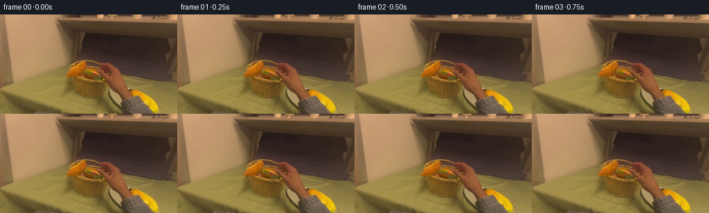
展开代码变化
--- 上一保存版本
+++ 本次保存版本
@@ -0,0 +1,243 @@
+from pathlib import Path
+
+import cv2
+import numpy as np
+from PIL import Image
+
+import artifact_io
+
+
+CASE_DIR = Path(__file__).resolve().parent
+W, H, N = 256, 144, 20
+
+
+def smoothstep(value):
+ value = float(np.clip(value, 0.0, 1.0))
+ return value * value * (3.0 - 2.0 * value)
+
+
+def make_hand_mask(image):
+ """Segment the hand, keeping the pale cuff and excluding the yellow tableware."""
+ crop_x0, crop_y0, crop_x1, crop_y1 = 124, 58, 225, 144
+ crop = image[crop_y0:crop_y1, crop_x0:crop_x1]
+
+ mask = np.full(crop.shape[:2], cv2.GC_PR_BGD, dtype=np.uint8)
+ outline = np.array(
+ [
+ [6, 25], [11, 15], [19, 10], [29, 8], [39, 9], [52, 15],
+ [66, 23], [80, 32], [93, 41], [98, 48], [94, 55], [83, 52],
+ [74, 49], [64, 47], [54, 50], [44, 58], [35, 65], [27, 74],
+ [19, 82], [12, 80], [9, 72], [10, 61], [8, 50], [5, 38],
+ ],
+ dtype=np.int32,
+ )
+ allowed = np.zeros(crop.shape[:2], dtype=np.uint8)
+ cv2.fillPoly(allowed, [outline], 255)
+ mask[allowed == 0] = cv2.GC_BGD
+
+ finger_seed = np.array(
+ [
+ [21, 17], [28, 14], [36, 15], [44, 20], [52, 25],
+ [60, 31], [68, 38], [74, 45], [65, 48], [56, 45],
+ [48, 40], [40, 33], [31, 26],
+ ],
+ dtype=np.int32,
+ )
+ cv2.fillPoly(mask, [finger_seed], cv2.GC_FGD)
+ cv2.fillPoly(
+ mask,
+ [np.array([[61, 51], [77, 51], [91, 58], [94, 84],
+ [50, 84], [48, 72], [51, 60]], dtype=np.int32)],
+ cv2.GC_FGD,
+ )
+ cv2.fillPoly(
+ mask,
+ [np.array([[3, 61], [8, 60], [12, 66], [10, 75], [4, 76]],
+ dtype=np.int32)],
+ cv2.GC_BGD,
+ )
+
+ bgd = np.zeros((1, 65), np.float64)
+ fgd = np.zeros((1, 65), np.float64)
+ cv2.grabCut(crop, mask, None, bgd, fgd, 8, cv2.GC_INIT_WITH_MASK)
+
+ crop_hand = np.where(
+ (mask == cv2.GC_FGD) | (mask == cv2.GC_PR_FGD), 255, 0
+ ).astype(np.uint8)
+ count, labels, stats, _ = cv2.connectedComponentsWithStats(crop_hand)
+ clean = np.zeros_like(crop_hand)
+ for index in range(1, count):
+ if stats[index, cv2.CC_STAT_AREA] > 30:
+ clean[labels == index] = 255
+
+ hand = np.zeros((H, W), dtype=np.uint8)
+ hand[crop_y0:crop_y1, crop_x0:crop_x1] = clean
+
+ hsv = cv2.cvtColor(image, cv2.COLOR_BGR2HSV)
+ blue, green, red = cv2.split(image)
+ cuff_poly = np.array(
+ [[178, 105], [192, 101], [204, 103], [213, 108], [218, 115],
+ [218, 124], [215, 134], [213, 143], [176, 143], [173, 132],
+ [174, 119], [175, 111]],
+ dtype=np.int32,
+ )
+ cuff = np.zeros_like(hand)
+ cv2.fillPoly(cuff, [cuff_poly], 255)
+ cloth_color = (
+ ((hsv[:, :, 1] < 75) & (red > 80) & (green > 70))
+ | ((hsv[:, :, 0] > 85) & (hsv[:, :, 0] < 135) & (hsv[:, :, 1] > 25))
+ )
+ hand[(cuff > 0) & cloth_color] = 255
+
+ # Fill the shadowed wrist bridge between the fingers and sleeve.
+ cv2.fillPoly(
+ hand,
+ [np.array([[166, 99], [180, 99], [191, 106], [193, 118],
+ [184, 124], [172, 120], [160, 110]], dtype=np.int32)],
+ 255,
+ )
+
+ # Remove any table-green spill from the lower-left edge.
+ green_spill = (
+ (hsv[:, :, 0] > 24)
+ & (hsv[:, :, 0] < 65)
+ & (hsv[:, :, 1] > 75)
+ )
+ hand[green_spill & (np.indices(hand.shape)[1] < 177)] = 0
+ hand = cv2.morphologyEx(hand, cv2.MORPH_CLOSE, np.ones((2, 2), np.uint8))
+ return hand
+
+
+def make_burger_mask(hand_mask):
+ """Isolate the sandwich and suppress the wicker handle crossing its top-left."""
+ mask = np.zeros((H, W), dtype=np.uint8)
+ outline = np.array(
+ [[121, 91], [122, 87], [125, 82], [129, 79], [134, 76],
+ [140, 75], [146, 77], [151, 81], [156, 85], [160, 89],
+ [163, 93], [164, 97], [162, 101], [158, 104], [152, 106],
+ [145, 107], [138, 105], [132, 102], [127, 99], [123, 96]],
+ dtype=np.int32,
+ )
+ cv2.fillPoly(mask, [outline], 255)
+
+ handle = np.array(
+ [[119, 80], [125, 76], [134, 78], [142, 82],
+ [141, 86], [133, 88], [124, 88], [119, 85]],
+ dtype=np.int32,
+ )
+ cv2.fillPoly(mask, [handle], 0)
+ mask[hand_mask > 0] = 0
+ return cv2.GaussianBlur(mask, (3, 3), 0)
+
+
+def build_scene(image, hand_mask, burger_mask):
+ background = cv2.inpaint(image, hand_mask, 5, cv2.INPAINT_TELEA)
+ background = cv2.inpaint(background, burger_mask, 5, cv2.INPAINT_TELEA)
+ return background
+
+
+def warp_layer(image, mask, dx, dy, angle=0.0, center=(158.0, 101.0)):
+ rotation = cv2.getRotationMatrix2D(center, angle, 1.0)
+ rotation[0, 2] += dx
+ rotation[1, 2] += dy
+ warped_image = cv2.warpAffine(
+ image, rotation, (W, H),
+ flags=cv2.INTER_LINEAR,
+ borderMode=cv2.BORDER_REPLICATE,
+ )
+ warped_mask = cv2.warpAffine(
+ mask, rotation, (W, H),
+ flags=cv2.INTER_LINEAR,
+ borderValue=0,
+ )
+ return warped_image, warped_mask.astype(np.float32) / 255.0
+
+
+def composite(base, image, alpha, strength=1.0):
+ opacity = np.clip(alpha * strength, 0.0, 1.0)[..., None]
+ return image.astype(np.float32) * opacity + base * (1.0 - opacity)
+
+
+def render_frames(image, hand_mask, burger_mask):
+ background = build_scene(image, hand_mask, burger_mask).astype(np.float32)
+ frames = [image.copy()]
+
+ for index in range(1, N):
+ # Hold briefly, then lift and carry with a soft, continuous arc.
+ if index <= 3:
+ progress = 0.0
+ else:
+ progress = smoothstep((index - 3) / 13.0)
+
+ if index <= 12:
+ carry = smoothstep(progress)
+ else:
+ carry = smoothstep(progress)
+
+ # The final offset puts the sandwich on the exposed plate.
+ burger_dx = 66.0 * carry
+ burger_dy = -12.0 * np.sin(np.pi * carry) + 27.0 * carry
+ burger_angle = -4.0 * np.sin(np.pi * carry)
+
+ # The hand follows the food, with a small extra lift during transit.
+ hand_dx = 60.0 * carry
+ hand_dy = burger_dy - 1.5 * np.sin(np.pi * carry)
+ hand_angle = -2.0 * np.sin(np.pi * carry)
+
+ # A very light global exposure lift suggests motion without changing the set.
+ exposure = 1.0 + 0.008 * np.sin(np.pi * carry)
+ frame = background * exposure
+
+ # Contact shadow beneath the sandwich, softened and biased down-right.
+ _, burger_alpha = warp_layer(
+ image, burger_mask, burger_dx + 2.0, burger_dy + 3.5, burger_angle
+ )
+ shadow_alpha = cv2.GaussianBlur(burger_alpha, (7, 7), 1.6)
+ shadow_alpha *= 0.27 * (0.35 + 0.65 * min(1.0, 2.3 * carry))
+ frame *= 1.0 - shadow_alpha[..., None] * 0.62
+
+ burger_image, burger_alpha = warp_layer(
+ image, burger_mask, burger_dx, burger_dy, burger_angle
+ )
+ frame = composite(frame, burger_image, burger_alpha)
+
+ hand_image, hand_alpha = warp_layer(
+ image, hand_mask, hand_dx, hand_dy, hand_angle
+ )
+ frame = composite(frame, hand_image, hand_alpha)
+
+ frames.append(np.clip(frame, 0, 255).astype(np.uint8))
+
+ return np.asarray(frames, dtype=np.uint8)
+
+
+def main():
+ image = np.asarray(Image.open(CASE_DIR / "first_frame.png").convert("RGB"))
+ bgr = cv2.cvtColor(image, cv2.COLOR_RGB2BGR)
+
+ hand_mask = make_hand_mask(bgr)
+ burger_mask = make_burger_mask(hand_mask)
+ frames = render_frames(image, hand_mask, burger_mask)
+
+ # The opening image is copied verbatim to satisfy the pixel-identical contract.
+ frames[0] = image.copy()
+
+ assert frames.shape == (N, H, W, 3)
+ assert frames.dtype == np.uint8
+ assert np.array_equal(frames[0], image)
+
+ artifact_io.save(frames, CASE_DIR)
+
+ writer = cv2.VideoWriter(
+ str(CASE_DIR / "video.mp4"),
+ cv2.VideoWriter_fourcc(*"mp4v"),
+ 4,
+ (W, H),
+ )
+ for frame in frames:
+ writer.write(cv2.cvtColor(frame, cv2.COLOR_RGB2BGR))
+ writer.release()
+
+
+if __name__ == "__main__":
+ main()
可观测工具轨迹
实际执行的命令与返回图片。
命令 1exit 0
/bin/bash -c "pwd && rg --files -g '"'!*__pycache__*'"' | sort"
命令 2exit 0
/bin/bash -c "sed -n '1,240p' prompt.txt"
命令 3exit 0
/bin/bash -c "sed -n '1,280p' GENERATION_RULES.md"
命令 4exit 0
/bin/bash -c 'file first_frame.png && identify first_frame.png 2>/dev/null || true && git status --short'
命令 5exit 0
/bin/bash -c 'cat task_spec.json'
命令 6exit 0
/bin/bash -c "sed -n '1,280p' artifact_io.py"
命令 7exit 0
/bin/bash -c "python - <<'PY'
from PIL import Image
im=Image.open('first_frame.png')
print(im.size, im.mode)
PY"命令 8exit 0
/bin/bash -c "python - <<'PY'
from PIL import Image
im=Image.open('first_frame.png')
im.resize((1024,576), Image.Resampling.NEAREST).save('.tmp/up_nearest.png')
im.resize((1024,576), Image.Resampling.LANCZOS).save('.tmp/up_smooth.png')
PY"命令 9exit 0
/bin/bash -c "python - <<'PY'
from PIL import Image
im=Image.open('first_frame.png')
for name,box in [('hand',(110,55,230,144)),('basket',(95,65,175,125)),('burger',(118,70,165,110)),('plate',(145,90,245,144))]:
im.crop(box).resize(((box[2]-box[0])*8,(box[3]-box[1])*8), Image.Resampling.NEAREST).save(f'.tmp/{name}.png')
PY"命令 10exit 0
/bin/bash -c "python - <<'PY' mods=['cv2','scipy','skimage'] for m in mods: try: mod=__import__(m); print(m, getattr(mod,'__version__','ok')) except Exception as e: print(m, type(e).__name__) PY"
命令 11exit 0
/bin/bash -c "python - <<'PY'
import cv2, numpy as np
from PIL import Image
im=cv2.imread('first_frame.png')
hsv=cv2.cvtColor(im,cv2.COLOR_BGR2HSV)
# skin-ish hand, broad RGB condition
b,g,r=cv2.split(im)
region=np.zeros(im.shape[:2],np.uint8)
poly=np.array([[126,83],[132,68],[150,60],[174,64],[200,80],[228,102],[235,143],[160,143],[144,117],[132,102]],np.int32)
cv2.fillPoly(region,[poly],255)
mask=((r.astype(int)>g.astype(int)+8)&(g.astype(int)>b.astype(int)+3)&(r>70)&(region>0)).astype(np.uint8)*255
mask=cv2.morphologyEx(mask,cv2.MORPH_CLOSE,np.ones((3,3),np.uint8))
mask=cv2.dilate(mask,np.ones((2,2),np.uint8),iterations=1)
out=im.copy(); out[mask>0]=(0,0,255)
cv2.imwrite('.tmp/hand_mask_overlay.png',out)
cv2.imwrite('.tmp/hand_mask.png',mask)
PY"命令 12exit 0
/bin/bash -c "python - <<'PY'
import cv2, numpy as np
im=cv2.imread('first_frame.png')
hsv=cv2.cvtColor(im,cv2.COLOR_BGR2HSV)
b,g,r=cv2.split(im)
region=np.zeros(im.shape[:2],np.uint8)
poly=np.array([[125,82],[130,68],[145,61],[165,62],[188,70],[214,88],[230,101],[235,143],[160,143],[142,116],[130,102]],np.int32)
cv2.fillPoly(region,[poly],255)
# Skin has red-dominant hue. Exclude white cuff / green cloth.
mask=((r.astype(int)>g.astype(int)+12)&(r.astype(int)>b.astype(int)+25)&(g.astype(int)>b.astype(int)+1)&(r>65)&(r<245)&(region>0)).astype(np.uint8)*255
mask=cv2.morphologyEx(mask,cv2.MORPH_CLOSE,np.ones((3,3),np.uint8))
mask=cv2.morphologyEx(mask,cv2.MORPH_OPEN,np.ones((2,2),np.uint8))
# largest connected components inside hand zone
n,lab,stats,cent=cv2.connectedComponentsWithStats(mask)
keep=np.zeros_like(mask)
for i in range(1,n):
if stats[i,cv2.CC_STAT_AREA]>8: keep[lab==i]=255
keep=cv2.dilate(keep,np.ones((2,2),np.uint8),iterations=1)
out=im.copy(); out[keep>0]=(0,0,255)
cv2.imwrite('.tmp/hand_mask_overlay2.png',out)
cv2.imwrite('.tmp/hand_mask2.png',keep)
print('pixels', (keep>0).sum())
PY"命令 13exit 0
/bin/bash -c "python - <<'PY'
import cv2, numpy as np
im=cv2.imread('first_frame.png')
b,g,r=cv2.split(im)
# sample table color statistics
for name,box in [('table',(20,110,90,140)),('plate',(170,110,230,140)),('basket',(110,95,145,120)),('burger',(125,85,160,105)),('hand',(145,75,170,105))]:
x1,y1,x2,y2=box
arr=im[y1:y2,x1:x2].reshape(-1,3)
print(name, 'BGR median', np.median(arr,0), 'mean',np.mean(arr,0).round(1))
PY"命令 14exit 0
/bin/bash -c "python - <<'PY'
import cv2, numpy as np
im=cv2.imread('first_frame.png')
b,g,r=cv2.split(im)
region=np.zeros(im.shape[:2],np.uint8)
poly=np.array([[124,82],[130,68],[146,60],[164,62],[187,69],[213,86],[230,100],[236,143],[160,143],[143,117],[130,101]],np.int32)
cv2.fillPoly(region,[poly],255)
# Remove pale cuff using saturation and relative blue.
hsv=cv2.cvtColor(im,cv2.COLOR_BGR2HSV)
mask=((r.astype(int)>g.astype(int)+10)&(r.astype(int)>b.astype(int)+18)&(g.astype(int)>b.astype(int)-2)&(r>65)&(hsv[:,:,1]>55)&(region>0)).astype(np.uint8)*255
mask=cv2.morphologyEx(mask,cv2.MORPH_CLOSE,np.ones((3,3),np.uint8))
mask=cv2.morphologyEx(mask,cv2.MORPH_OPEN,np.ones((2,2),np.uint8))
n,lab,stats,cent=cv2.connectedComponentsWithStats(mask)
keep=np.zeros_like(mask)
for i in range(1,n):
if stats[i,cv2.CC_STAT_AREA]>12: keep[lab==i]=255
# Explicitly keep cuff region if cloth-blue: hue ~100-115
# Build near-forearm polygon based on actual visible boundaries, excluding pale cuff.
arm=np.zeros_like(mask)
cv2.fillPoly(arm,[np.array([[176,100],[205,94],[236,103],[236,143],[165,143],[153,124]],np.int32)],255)
# add dark denim cuff in lower right, using saturation + hue
cuff=((hsv[:,:,0]>85)&(hsv[:,:,0]<125)&(hsv[:,:,1]>25)&(arm>0)).astype(np.uint8)*255
keep=cv2.bitwise_or(keep,cuff)
keep=cv2.dilate(keep,np.ones((2,2),np.uint8),iterations=1)
out=im.copy(); out[keep>0]=(0,0,255)
cv2.imwrite('.tmp/hand_mask_overlay3.png',out)
cv2.imwrite('.tmp/hand_mask3.png',keep)
print('pixels',(keep>0).sum())
PY"命令 15exit 0
/bin/bash -c "python - <<'PY'
import cv2,numpy as np
im=cv2.imread('first_frame.png')
b,g,r=cv2.split(im); hsv=cv2.cvtColor(im,cv2.COLOR_BGR2HSV)
region=np.zeros(im.shape[:2],np.uint8)
cv2.fillPoly(region,[np.array([[124,82],[130,68],[146,60],[164,62],[187,69],[213,86],[230,100],[236,143],[160,143],[143,117],[130,101]],np.int32)],255)
mask=((r.astype(int)>g.astype(int)+10)&(r.astype(int)>b.astype(int)+18)&(hsv[:,:,1]>55)&(region>0)).astype(np.uint8)*255
mask=cv2.morphologyEx(mask,cv2.MORPH_CLOSE,np.ones((3,3),np.uint8))
n,lab,stats,cent=cv2.connectedComponentsWithStats(mask)
keep=np.zeros_like(mask)
for i in range(1,n):
if stats[i,cv2.CC_STAT_AREA]>12: keep[lab==i]=255
# explicit forearm only where visibly dark gray/blue; polygon stop at cuff
arm=np.zeros_like(mask); cv2.fillPoly(arm,[np.array([[185,101],[205,94],[235,103],[235,143],[180,143],[169,127]],np.int32)],255)
cuff=((hsv[:,:,0]>85)&(hsv[:,:,0]<125)&(hsv[:,:,1]>30)&(arm>0)).astype(np.uint8)*255
keep=cv2.bitwise_or(keep,cuff)
# Fill interior holes.
cnts,_=cv2.findContours(keep,cv2.RETR_EXTERNAL,cv2.CHAIN_APPROX_SIMPLE)
filled=np.zeros_like(keep); cv2.drawContours(filled,cnts,-1,255,-1)
keep=filled
keep=cv2.dilate(keep,np.ones((3,3),np.uint8),iterations=1)
out=im.copy(); out[keep>0]=(0,0,255)
cv2.imwrite('.tmp/hand_mask_overlay4.png',out)
cv2.imwrite('.tmp/hand_mask4.png',keep)
PY"命令 16exit 0
/bin/bash -c "python - <<'PY'
import cv2,numpy as np
im=cv2.imread('first_frame.png')
b,g,r=cv2.split(im); hsv=cv2.cvtColor(im,cv2.COLOR_BGR2HSV)
region=np.zeros(im.shape[:2],np.uint8)
cv2.fillPoly(region,[np.array([[124,82],[130,68],[146,60],[164,62],[187,69],[213,86],[230,100],[236,143],[160,143],[143,117],[130,101]],np.int32)],255)
mask=((r.astype(int)>g.astype(int)+10)&(r.astype(int)>b.astype(int)+18)&(hsv[:,:,1]>55)&(region>0)).astype(np.uint8)*255
mask=cv2.morphologyEx(mask,cv2.MORPH_CLOSE,np.ones((3,3),np.uint8))
n,lab,stats,cent=cv2.connectedComponentsWithStats(mask)
keep=np.zeros_like(mask)
for i in range(1,n):
if stats[i,cv2.CC_STAT_AREA]>12: keep[lab==i]=255
cnts,_=cv2.findContours(keep,cv2.RETR_EXTERNAL,cv2.CHAIN_APPROX_SIMPLE)
filled=np.zeros_like(keep); cv2.drawContours(filled,cnts,-1,255,-1)
keep=filled
keep=cv2.dilate(keep,np.ones((3,3),np.uint8),iterations=1)
# Add the cuff based on hand silhouette manually, not background selection.
cuffpoly=np.array([[176,101],[195,95],[212,96],[226,101],[234,109],[234,143],[170,143],[165,129],[166,118]],np.int32)
# use poly exactly; antialias alpha later
cv2.fillPoly(keep,[cuffpoly],255)
out=im.copy(); out[keep>0]=(0,0,255)
cv2.imwrite('.tmp/hand_mask_overlay5.png',out)
cv2.imwrite('.tmp/hand_mask5.png',keep)
PY"命令 17exit 0
/bin/bash -c "python - <<'PY'
import cv2,numpy as np
im=cv2.imread('first_frame.png')
# crop full hand with mask for transparency preview
mask=cv2.imread('.tmp/hand_mask5.png',0)
rgba=cv2.cvtColor(im,cv2.COLOR_BGR2BGRA); rgba[:,:,3]=mask
cv2.imwrite('.tmp/hand_cut.png',rgba)
# inpainting preview static background behind hand
bg=cv2.inpaint(im,mask,5,cv2.INPAINT_TELEA)
cv2.imwrite('.tmp/bg_inpaint.png',bg)
# patch blend bg for comparison
PY"命令 18exit 0
/bin/bash -c "python - <<'PY'
import cv2,numpy as np
im=cv2.imread('first_frame.png')
# enlarged burger crop with guide coordinates
out=cv2.resize(im[68:108,116:168],(520,400),interpolation=cv2.INTER_NEAREST)
# draw grid every 5 source px
for x in range(0,53,5): cv2.line(out,(x*10,0),(x*10,399),(255,255,255),1)
for y in range(0,41,5): cv2.line(out,(0,y*10),(519,y*10),(255,255,255),1)
cv2.imwrite('.tmp/burger_grid.png',out)
PY"命令 19exit 0
/bin/bash -c "python - <<'PY'
import cv2,numpy as np
im=cv2.imread('first_frame.png')
# grid original hand area, annotated source coords
x0,y0,x1,y1=120,55,240,144
out=cv2.resize(im[y0:y1,x0:x1],((x1-x0)*6,(y1-y0)*6),interpolation=cv2.INTER_NEAREST)
for x in range(x0,x1+1,10):
xx=(x-x0)*6; cv2.line(out,(xx,0),(xx,out.shape[0]-1),(255,255,255),1); cv2.putText(out,str(x),(xx+2,12),cv2.FONT_HERSHEY_SIMPLEX,.3,(255,255,255),1)
for y in range(y0,y1+1,10):
yy=(y-y0)*6; cv2.line(out,(0,yy),(out.shape[1]-1,yy),(255,255,255),1); cv2.putText(out,str(y),(2,yy+10),cv2.FONT_HERSHEY_SIMPLEX,.3,(255,255,255),1)
cv2.imwrite('.tmp/hand_grid.png',out)
PY"命令 20exit 0
/bin/bash -c "python - <<'PY'
import cv2,numpy as np
im=cv2.imread('first_frame.png')
x0,y0,x1,y1=115,65,180,130
out=cv2.resize(im[y0:y1,x0:x1],((x1-x0)*8,(y1-y0)*8),interpolation=cv2.INTER_NEAREST)
for x in range(x0,x1+1,5):
xx=(x-x0)*8; cv2.line(out,(xx,0),(xx,out.shape[0]-1),(255,255,255),1); cv2.putText(out,str(x),(xx+1,10),cv2.FONT_HERSHEY_SIMPLEX,.25,(255,255,255),1)
for y in range(y0,y1+1,5):
yy=(y-y0)*8; cv2.line(out,(0,yy),(out.shape[1]-1,yy),(255,255,255),1); cv2.putText(out,str(y),(1,yy+8),cv2.FONT_HERSHEY_SIMPLEX,.25,(255,255,255),1)
cv2.imwrite('.tmp/basket_grid.png',out)
PY"命令 21exit 0
/bin/bash -c "python - <<'PY'
import cv2,numpy as np
im=cv2.imread('first_frame.png')
# inspect manually defined polygons: full hand excluding pale cuff by hand-drawn outer silhouette, forearm as quad.
mask=np.zeros(im.shape[:2],np.uint8)
# skin silhouette from fingertip to wrist, traced around hand. includes gaps covered by handle? use union.
skin_polys=[
np.array([[131,83],[137,73],[145,68],[153,67],[162,69],[173,73],[185,80],[197,88],[209,95],[218,100],[221,108],[214,113],[200,108],[189,104],[178,105],[169,112],[159,119],[151,126],[146,132],[140,136],[134,132],[132,124],[135,115],[134,107],[131,98]],np.int32),
np.array([[146,65],[153,61],[160,60],[167,61],[173,64],[172,68],[166,70],[158,70],[151,68]],np.int32), # thumb
]
for p in skin_polys: cv2.fillPoly(mask,[p],255)
# refine skin based on color within polygon to remove handle contamination? skip.
# cuff and forearm exact silhouette approximated
cv2.fillPoly(mask,[np.array([[176,101],[193,96],[211,96],[225,101],[234,108],[236,143],[170,143],[165,129],[165,119]],np.int32)],255)
# overlap erode? save
out=im.copy(); out[mask>0]=(0,0,255)
cv2.imwrite('.tmp/manual_hand_overlay.png',out)
cv2.imwrite('.tmp/manual_hand_mask.png',mask)
PY"命令 22exit 0
/bin/bash -c "python - <<'PY'
from PIL import Image
im=Image.open('first_frame.png')
pts=[(150,65),(155,70),(160,75),(170,80),(180,90),(200,110),(145,80),(140,90),(150,100),(160,90),(175,95),(190,100),(200,120),(220,130),(140,72),(135,68),(150,68),(160,66),(165,70),(160,80),(130,85),(170,70)]
for p in pts: print(p,im.getpixel(p))
PY"命令 23exit 0
/bin/bash -c "python - <<'PY'
from PIL import Image
im=Image.open('first_frame.png')
im.crop((118,68,170,112)).resize((624,528), Image.Resampling.LANCZOS).save('.tmp/burger_smooth.png')
PY"命令 24exit 0
/bin/bash -c "python - <<'PY'
import cv2,numpy as np
im=cv2.imread('first_frame.png')
# visualize foreground candidate with green background excluded
b,g,r=cv2.split(im); hsv=cv2.cvtColor(im,cv2.COLOR_BGR2HSV)
y,x=np.mgrid[:144,:256]
roi=(x>118)&(x<166)&(y>72)&(y<110)
# object mask via warmer, darker, more saturated than green table/basket
mask=(((r.astype(int)>g.astype(int)+5)&(r>65))|((r<95)&(g<100)&(b<80))|((r>125)&(g>80)&(b<85)))&roi
# Exclude obvious table green hue ~35 deg
mask &= ~((hsv[:,:,0]>20)&(hsv[:,:,0]<45)&(hsv[:,:,1]>65)&(r>80)&(g>90))
# Exclude basket strands dark browns: require reddish / burger colors
mask &= ((r.astype(int)>g.astype(int)+12)|((r>150)&(g>110)))
mask=mask.astype(np.uint8)*255
# remove tiny
n,lab,stats,_=cv2.connectedComponentsWithStats(mask)
k=np.zeros_like(mask)
for i in range(1,n):
if stats[i,cv2.CC_STAT_AREA]>5: k[lab==i]=255
out=im.copy(); out[k>0]=(0,0,255)
cv2.imwrite('.tmp/burger_mask_overlay.png',out); cv2.imwrite('.tmp/burger_mask.png',k)
PY"命令 25exit 0
/bin/bash -c "python - <<'PY'
import cv2,numpy as np
im=cv2.imread('first_frame.png')
mask=np.zeros(im.shape[:2],np.uint8)
# Burger silhouette manually following visible bun/lettuce/tomato outline, excluding basket handle.
poly=np.array([[120,93],[121,88],[124,83],[129,78],[136,75],[143,76],[149,80],[156,86],[162,92],[164,99],[162,104],[157,107],[150,108],[142,106],[135,104],[128,101],[123,98]],np.int32)
cv2.fillPoly(mask,[poly],255)
# do not include where basket rim occludes at x<127 y>95 and x>158 y>99? actual burger edge hidden by basket; preserve.
out=im.copy(); out[mask>0]=(0,0,255)
cv2.imwrite('.tmp/burger_poly_overlay.png',out); cv2.imwrite('.tmp/burger_poly_mask.png',mask)
PY"命令 26exit 0
/bin/bash -c "python - <<'PY'
import cv2,numpy as np
im=cv2.imread('first_frame.png')
mask=np.zeros(im.shape[:2],np.uint8)
# more exact burger silhouette traced from enlarged crop; leave basket rim pixels out of object
poly=np.array([[121,93],[121,89],[124,84],[128,80],[132,77],[138,75],[144,76],[149,79],[153,83],[158,87],[162,91],[164,96],[162,101],[159,104],[153,106],[147,107],[141,105],[136,104],[132,102],[127,101],[123,98]],np.int32)
cv2.fillPoly(mask,[poly],255)
# exclude basket rim through lower edge: rim is lighter green/yellow than burger. we'll preserve but mark eroded.
out=im.copy(); out[mask>0]=(0,0,255)
cv2.imwrite('.tmp/burger_poly_overlay2.png',out); cv2.imwrite('.tmp/burger_poly_mask2.png',mask)
PY"命令 27exit 0
/bin/bash -c "python - <<'PY'
import cv2,numpy as np
im=cv2.imread('first_frame.png')
mask=np.zeros(im.shape[:2],np.uint8)
poly=np.array([[121,93],[121,89],[124,84],[128,80],[132,77],[138,75],[144,76],[149,79],[153,83],[158,87],[162,91],[164,96],[162,101],[159,104],[153,106],[147,107],[141,105],[136,104],[132,102],[127,101],[123,98]],np.int32)
cv2.fillPoly(mask,[poly],255)
# erode lower rim where burger occluded; instead alpha feather outer only.
# save object crop with alpha
alpha=cv2.GaussianBlur(mask,(3,3),0)
rgba=cv2.cvtColor(im,cv2.COLOR_BGR2BGRA); rgba[:,:,3]=alpha
cv2.imwrite('.tmp/burger_cut.png',rgba)
bg=cv2.inpaint(im,mask,4,cv2.INPAINT_TELEA); cv2.imwrite('.tmp/bg_without_burger.png',bg)
PY"命令 28exit 0
/bin/bash -c "python - <<'PY'
import cv2,numpy as np
im=cv2.imread('first_frame.png')
mask=np.zeros(im.shape[:2],np.uint8)
mask[:]=cv2.GC_BGD
# probable foreground broad hand/arm region
fg=np.zeros(im.shape[:2],np.uint8)
# skin core seeds (narrow safe areas)
cv2.fillPoly(fg,[np.array([[145,72],[153,68],[160,70],[161,77],[156,82],[148,80]],np.int32)],255)
cv2.fillPoly(fg,[np.array([[148,82],[158,79],[169,82],[180,88],[188,94],[180,101],[169,99],[158,92]],np.int32)],255)
cv2.fillPoly(fg,[np.array([[180,102],[197,96],[211,98],[220,104],[228,111],[226,131],[201,132],[183,122],[171,111]],np.int32)],255)
cv2.fillPoly(fg,[np.array([[170,108],[190,104],[211,111],[222,125],[216,138],[181,138],[165,124]],np.int32)],255)
mask[fg>0]=cv2.GC_FGD
# probable bg obvious regions
bg=np.zeros_like(mask)
cv2.rectangle(bg,(0,0),(255,55),255); cv2.rectangle(bg,(0,120),(125,143),255); cv2.rectangle(bg,(185,55),(255,85),255); cv2.rectangle(bg,(0,85),(115,143),255)
mask[bg>0]=cv2.GC_BGD
# possible everything in bbox
mask[(np.indices(mask.shape)[1]>=126)&(np.indices(mask.shape)[1]<238)&(np.indices(mask.shape)[0]>=58)&(np.indices(mask.shape)[0]<144)] = cv2.GC_PR_BGD
# reset fg/bg overrides
mask[fg>0]=cv2.GC_FGD; mask[bg>0]=cv2.GC_BGD
bgd=np.zeros((1,65),np.float64); fgd=np.zeros((1,65),np.float64)
try:
cv2.grabCut(im,mask,None,bgd,fgd,8,cv2.GC_INIT_WITH_MASK)
out=np.where((mask==2)|(mask==0),0,1).astype('uint8')*255
# preserve only connected comps with seed
n,lab,stats,_=cv2.connectedComponentsWithStats(out)
keep=np.zeros_like(out)
for i in range(1,n):
if stats[i,cv2.CC_STAT_AREA]>30: keep[lab==i]=255
keep=cv2.morphologyEx(keep,cv2.MORPH_CLOSE,np.ones((3,3),np.uint8))
ov=im.copy(); ov[keep>0]=(0,0,255)
cv2.imwrite('.tmp/grabcut_hand_overlay.png',ov); cv2.imwrite('.tmp/grabcut_hand_mask.png',keep)
print('pix', (keep>0).sum())
except Exception as e: print(type(e),e)
PY"命令 29exit 0
/bin/bash -c "python - <<'PY'
import cv2,numpy as np
im=cv2.imread('first_frame.png')
mask=np.zeros(im.shape[:2],np.uint8)
# arm/sleeve mask defined by visible silhouette from wrist to bottom-right.
arm_poly=np.array([[181,100],[195,96],[208,96],[220,100],[228,105],[234,112],[235,143],[170,143],[166,132],[166,122],[170,113]],np.int32)
cv2.fillPoly(mask,[arm_poly],255)
# hand mask using hand traced polygons.
hand_polys=[
np.array([[131,83],[136,74],[143,69],[151,67],[160,69],[171,73],[184,79],[195,86],[205,92],[214,97],[220,102],[221,108],[216,113],[207,110],[199,108],[190,105],[181,106],[172,112],[164,119],[157,126],[150,133],[143,139],[136,138],[133,131],[134,122],[134,112],[131,101]],np.int32),
np.array([[145,66],[151,62],[158,60],[165,61],[172,64],[173,68],[168,70],[160,71],[152,69]],np.int32),
]
for p in hand_polys: cv2.fillPoly(mask,[p],255)
# Build alpha only for foreground edges; but if transparent region includes old objects/background, inpaint background.
alpha=mask.copy()
# Soft edge with blur only at silhouette
alpha=cv2.GaussianBlur(alpha,(3,3),0)
rgba=cv2.cvtColor(im,cv2.COLOR_BGR2BGRA); rgba[:,:,3]=alpha
cv2.imwrite('.tmp/hand_cut2.png',rgba)
# Inpaint whole mask using telea. Better than grabcut because it fills basket behind.
bg=cv2.inpaint(im,mask,4,cv2.INPAINT_TELEA)
cv2.imwrite('.tmp/bg_without_hand.png',bg)
ov=im.copy(); ov[mask>0]=(0,0,255); cv2.imwrite('.tmp/hand_mask2_overlay.png',ov)
PY"命令 30exit 0
/bin/bash -c "python - <<'PY'
import cv2,numpy as np
im=cv2.imread('first_frame.png')
# better hand mask: color segment + manually include cuff. Output as crop-ready alpha.
hsv=cv2.cvtColor(im,cv2.COLOR_BGR2HSV); b,g,r=cv2.split(im)
roi=np.zeros(im.shape[:2],np.uint8)
cv2.fillPoly(roi,[np.array([[128,82],[134,70],[145,63],[158,63],[173,68],[190,77],[209,88],[224,98],[236,108],[236,143],[159,143],[144,124],[133,107]],np.int32)],255)
skin=((r.astype(int)>g.astype(int)+10)&(r.astype(int)>b.astype(int)+18)&(hsv[:,:,1]>55)&(roi>0)).astype(np.uint8)*255
skin=cv2.morphologyEx(skin,cv2.MORPH_CLOSE,np.ones((3,3),np.uint8))
n,lab,stats,_=cv2.connectedComponentsWithStats(skin)
keep=np.zeros_like(skin)
for i in range(1,n):
if stats[i,cv2.CC_STAT_AREA]>15: keep[lab==i]=255
# fill contours
cnts,_=cv2.findContours(keep,cv2.RETR_EXTERNAL,cv2.CHAIN_APPROX_SIMPLE); keep[:]=0; cv2.drawContours(keep,cnts,-1,255,-1)
# remove pale cuff cut-out using explicit polygon, but union with sleeve below y=101
# hand shape is now mostly solid; set lower wrist union arm polygon.
cv2.fillPoly(keep,[np.array([[181,101],[198,96],[214,98],[226,103],[235,110],[236,143],[167,143],[166,130],[170,117]],np.int32)],255)
# exclude pale cuff pixels (high brightness low saturation) from upper area only; preserve denim below
pale=((hsv[:,:,1]<55)&(r>120)&(g>120)&(b>90)).astype(np.uint8)*255
keep[pale>0]=0
# However, hand has pale fingernail; re-add skin components eroded? done skin still contains fingers.
keep=cv2.bitwise_or(keep,skin)
# dilate slight
keep=cv2.dilate(keep,np.ones((3,3),np.uint8),iterations=1)
# fill again
cnts,_=cv2.findContours(keep,cv2.RETR_EXTERNAL,cv2.CHAIN_APPROX_SIMPLE); keep[:]=0; cv2.drawContours(keep,cnts,-1,255,-1)
ov=im.copy();ov[keep>0]=(0,0,255);cv2.imwrite('.tmp/hand_mask_final_overlay.png',ov);cv2.imwrite('.tmp/hand_mask_final.png',keep)
bg=cv2.inpaint(im,keep,5,cv2.INPAINT_TELEA);cv2.imwrite('.tmp/bg_without_hand_final.png',bg)
PY"命令 31exit 0
/bin/bash -c "python - <<'PY'
import cv2,numpy as np
im=cv2.imread('first_frame.png')
hsv=cv2.cvtColor(im,cv2.COLOR_BGR2HSV); b,g,r=cv2.split(im)
roi=np.zeros(im.shape[:2],np.uint8)
cv2.fillPoly(roi,[np.array([[128,82],[134,70],[145,63],[158,63],[173,68],[190,77],[209,88],[224,98],[236,108],[236,143],[159,143],[144,124],[133,107]],np.int32)],255)
skin=((r.astype(int)>g.astype(int)+10)&(r.astype(int)>b.astype(int)+18)&(hsv[:,:,1]>55)&(roi>0)).astype(np.uint8)*255
skin=cv2.morphologyEx(skin,cv2.MORPH_CLOSE,np.ones((3,3),np.uint8))
n,lab,stats,_=cv2.connectedComponentsWithStats(skin)
keep=np.zeros_like(skin)
for i in range(1,n):
if stats[i,cv2.CC_STAT_AREA]>15: keep[lab==i]=255
cnts,_=cv2.findContours(keep,cv2.RETR_EXTERNAL,cv2.CHAIN_APPROX_SIMPLE); keep[:]=0; cv2.drawContours(keep,cnts,-1,255,-1)
# Keep skin, do not include pale cuff at all. Forearm/sleeve is almost rectangular separate below y=101.
cv2.fillPoly(keep,[np.array([[184,101],[200,96],[214,98],[226,104],[236,111],[236,143],[172,143],[168,130],[171,116]],np.int32)],255)
# Hand must include the dark shadowed wrist/thumb connecting to cuff around (170,100)-(188,118), fill this bridge.
cv2.fillPoly(keep,[np.array([[166,97],[181,97],[190,107],[188,118],[177,122],[166,115],[157,105]],np.int32)],255)
ov=im.copy();ov[keep>0]=(0,0,255);cv2.imwrite('.tmp/hand_mask_final_overlay2.png',ov);cv2.imwrite('.tmp/hand_mask_final2.png',keep)
PY"命令 32exit 0
/bin/bash -c "python - <<'PY'
from PIL import Image
import numpy as np
im=Image.open('first_frame.png').convert('RGB')
mask=Image.open('.tmp/hand_mask_final2.png').convert('L')
rgba=im.copy(); rgba.putalpha(mask)
# checker preview
arr=np.array(rgba)
a=arr[:,:,3:4]/255.0
checker=((np.indices((144,256)).sum(0)//8)%2*40+80)[...,None].repeat(3,2).astype(float)
out=(arr[:,:,:3]*a+checker*(1-a)).astype(np.uint8)
Image.fromarray(out).resize((1024,576),Image.Resampling.NEAREST).save('.tmp/hand_checker.png')
PY"命令 33exit 0
/bin/bash -c "python - <<'PY'
import cv2,numpy as np
im=cv2.imread('first_frame.png')
hsv=cv2.cvtColor(im,cv2.COLOR_BGR2HSV); b,g,r=cv2.split(im)
roi=np.zeros(im.shape[:2],np.uint8)
cv2.fillPoly(roi,[np.array([[128,82],[134,70],[145,63],[158,63],[173,68],[190,77],[209,88],[224,98],[236,108],[236,143],[159,143],[144,124],[133,107]],np.int32)],255)
skin=((r.astype(int)>g.astype(int)+10)&(r.astype(int)>b.astype(int)+18)&(hsv[:,:,1]>55)&(roi>0)).astype(np.uint8)*255
skin=cv2.morphologyEx(skin,cv2.MORPH_CLOSE,np.ones((3,3),np.uint8))
n,lab,stats,_=cv2.connectedComponentsWithStats(skin)
keep=np.zeros_like(skin)
for i in range(1,n):
if stats[i,cv2.CC_STAT_AREA]>15: keep[lab==i]=255
cnts,_=cv2.findContours(keep,cv2.RETR_EXTERNAL,cv2.CHAIN_APPROX_SIMPLE); keep[:]=0; cv2.drawContours(keep,cnts,-1,255,-1)
# actual sleeve silhouette: pale cuff from (177,105) to (199,144), denim to right
cv2.fillPoly(keep,[np.array([[179,103],[194,100],[207,101],[219,106],[228,111],[235,119],[236,143],[174,143],[172,131],[174,119]],np.int32)],255)
cv2.fillPoly(keep,[np.array([[164,99],[179,99],[190,108],[190,118],[180,124],[166,118],[158,107]],np.int32)],255)
ov=im.copy();ov[keep>0]=(0,0,255);cv2.imwrite('.tmp/hand_mask_final_overlay3.png',ov);cv2.imwrite('.tmp/hand_mask_final3.png',keep)
PY"命令 34exit 0
/bin/bash -c "python - <<'PY'
import cv2,numpy as np
im=cv2.imread('first_frame.png')
hsv=cv2.cvtColor(im,cv2.COLOR_BGR2HSV); b,g,r=cv2.split(im)
roi=np.zeros(im.shape[:2],np.uint8)
cv2.fillPoly(roi,[np.array([[128,82],[134,70],[145,63],[158,63],[173,68],[190,77],[209,88],[224,98],[236,108],[236,143],[159,143],[144,124],[133,107]],np.int32)],255)
skin=((r.astype(int)>g.astype(int)+10)&(r.astype(int)>b.astype(int)+18)&(hsv[:,:,1]>55)&(roi>0)).astype(np.uint8)*255
skin=cv2.morphologyEx(skin,cv2.MORPH_CLOSE,np.ones((3,3),np.uint8))
n,lab,stats,_=cv2.connectedComponentsWithStats(skin)
keep=np.zeros_like(skin)
for i in range(1,n):
if stats[i,cv2.CC_STAT_AREA]>15: keep[lab==i]=255
cnts,_=cv2.findContours(keep,cv2.RETR_EXTERNAL,cv2.CHAIN_APPROX_SIMPLE); keep[:]=0; cv2.drawContours(keep,cnts,-1,255,-1)
# hand only; cuff is exact polygon, not fill gap. wrist skin bridge to cuff.
cv2.fillPoly(keep,[np.array([[169,98],[185,101],[194,111],[193,123],[183,126],[169,120],[159,107]],np.int32)],255)
# Pale cuff boundary starts x ~180 y 108 and slopes right. Exclude green table below x<180.
cuff=np.array([[181,104],[194,101],[206,101],[218,106],[228,112],[235,120],[236,143],[173,143],[171,133],[173,121],[175,113]],np.int32)
cv2.fillPoly(keep,[cuff],255)
ov=im.copy();ov[keep>0]=(0,0,255);cv2.imwrite('.tmp/hand_mask_final_overlay4.png',ov);cv2.imwrite('.tmp/hand_mask_final4.png',keep)
PY"命令 35exit 0
/bin/bash -c "python - <<'PY'
import cv2,numpy as np
im=cv2.imread('first_frame.png')
# focus burger only: inspect possible outline with hue and texture
hsv=cv2.cvtColor(im,cv2.COLOR_BGR2HSV)
out=im.copy()
# draw candidate bbox points labels
for p in [(121,89),(121,93),(124,84),(128,80),(132,77),(138,75),(144,76),(149,79),(153,83),(158,87),(162,91),(164,96),(162,101),(159,104),(153,106),(147,107),(141,105),(136,104),(132,102),(127,101),(123,98)]:
cv2.circle(out,p,1,(255,255,255),-1)
cv2.imwrite('.tmp/burger_points.png',out)
# extract object crop and composite to target plate rough to see scale
mask=cv2.imread('.tmp/burger_poly_mask2.png',0)
obj=im.copy(); obj[mask==0]=0
cv2.imwrite('.tmp/burger_obj_black.png',obj)
PY"命令 36exit 0
/bin/bash -c "python - <<'PY'
import cv2,numpy as np
im=cv2.imread('first_frame.png')
# Generate plausible inpainting by using texture patch nearest but preserve basket geometry.
mask=cv2.imread('.tmp/burger_poly_mask2.png',0)
# We can use exemplar fill through cv2.inpaint then add basket strands procedurally.
bg=cv2.inpaint(im,mask,6,cv2.INPAINT_TELEA)
cv2.imwrite('.tmp/bg_burger_basic.png',bg)
PY"命令 37exit 0
/bin/bash -c "python - <<'PY'
import cv2,numpy as np
im=cv2.imread('first_frame.png')
hsv=cv2.cvtColor(im,cv2.COLOR_BGR2HSV); b,g,r=cv2.split(im)
roi=np.zeros(im.shape[:2],np.uint8)
cv2.fillPoly(roi,[np.array([[128,82],[134,70],[145,63],[158,63],[173,68],[190,77],[209,88],[224,98],[236,108],[236,143],[159,143],[144,124],[133,107]],np.int32)],255)
skin=((r.astype(int)>g.astype(int)+10)&(r.astype(int)>b.astype(int)+18)&(hsv[:,:,1]>55)&(roi>0)).astype(np.uint8)*255
skin=cv2.morphologyEx(skin,cv2.MORPH_CLOSE,np.ones((3,3),np.uint8))
n,lab,stats,_=cv2.connectedComponentsWithStats(skin)
keep=np.zeros_like(skin)
for i in range(1,n):
if stats[i,cv2.CC_STAT_AREA]>15: keep[lab==i]=255
cnts,_=cv2.findContours(keep,cv2.RETR_EXTERNAL,cv2.CHAIN_APPROX_SIMPLE); keep[:]=0; cv2.drawContours(keep,cnts,-1,255,-1)
cv2.fillPoly(keep,[np.array([[169,98],[185,101],[194,111],[193,123],[183,126],[169,120],[159,107]],np.int32)],255)
# correct cuff silhouette now: sleeve boundary from wrist ~ (181,107) to (200,112) then lower-left edge at (183,144)
# It must not include green below x 180 y 115.
cv2.fillPoly(keep,[np.array([[178,106],[190,102],[204,102],[216,107],[225,112],[233,120],[236,143],[184,143],[177,132],[176,120]],np.int32)],255)
# trim any table green from mask using color, except cuff is pale/blue.
green=((hsv[:,:,0]>25)&(hsv[:,:,0]<60)&(hsv[:,:,1]>70)).astype(np.uint8)*255
# only trim upper (not denim) and not pale cuff
trim=(green>0)&(np.indices(green.shape)[0]<126)&(np.indices(green.shape)[1]<205)
keep[trim]=0
ov=im.copy();ov[keep>0]=(0,0,255);cv2.imwrite('.tmp/hand_mask_final_overlay5.png',ov);cv2.imwrite('.tmp/hand_mask_final5.png',keep)
PY"命令 38exit 0
/bin/bash -c "python - <<'PY'
import cv2
im=cv2.imread('first_frame.png')
x0,y0,x1,y1=155,90,240,144
out=cv2.resize(im[y0:y1,x0:x1],((x1-x0)*10,(y1-y0)*10),interpolation=cv2.INTER_NEAREST)
for x in range(x0,x1+1,5):
xx=(x-x0)*10; cv2.line(out,(xx,0),(xx,out.shape[0]-1),(255,255,255),1); cv2.putText(out,str(x),(xx+1,10),cv2.FONT_HERSHEY_SIMPLEX,.25,(255,255,255),1)
for y in range(y0,y1+1,5):
yy=(y-y0)*10; cv2.line(out,(0,yy),(out.shape[1]-1,yy),(255,255,255),1); cv2.putText(out,str(y),(1,yy+8),cv2.FONT_HERSHEY_SIMPLEX,.25,(255,255,255),1)
cv2.imwrite('.tmp/wrist_grid.png',out)
PY"命令 39exit 0
/bin/bash -c "python - <<'PY'
from PIL import Image
im=Image.open('first_frame.png')
for p in [(145,125),(155,125),(165,125),(175,125),(180,125),(185,125),(190,125),(195,125),(200,125),(210,125),(180,135),(190,135),(200,135),(210,135),(220,135)]: print(p, im.getpixel(p))
PY"命令 40exit 0
/bin/bash -c "python - <<'PY'
import cv2,numpy as np
im=cv2.imread('first_frame.png')
# Construct an initial render script using approximate masks and smooth transforms. We'll inspect stills before saving final.
PY"命令 41exit 0
/bin/bash -c "python - <<'PY'
import cv2,numpy as np
im=cv2.imread('first_frame.png')
mask=np.zeros(im.shape[:2],np.uint8)
# full object with occluded lower edge; put red overlay 50%
poly=np.array([[120,92],[121,88],[124,83],[128,79],[133,76],[139,75],[145,77],[150,80],[154,84],[159,88],[162,92],[163,96],[161,100],[157,103],[151,105],[144,106],[138,104],[133,102],[128,100],[123,97]],np.int32)
cv2.fillPoly(mask,[poly],255)
ov=im.copy(); red=np.zeros_like(im); red[:]=(0,0,255); ov=np.where(mask[...,None]>0,(im*.55+red*.45).astype(np.uint8),im)
cv2.imwrite('.tmp/burger_alpha_overlay.png',ov)
PY"命令 42exit 0
/bin/bash -c "python - <<'PY'
import cv2,numpy as np
im=cv2.imread('first_frame.png')
# exact crop maps: object source bbox x118..168 y72..111
# mask from polygon refined to leave basket strands at bottom
poly=np.array([[120,92],[121,88],[124,83],[128,79],[133,76],[139,75],[145,77],[150,80],[154,84],[159,88],[162,92],[163,96],[161,100],[157,103],[151,105],[144,106],[138,104],[133,102],[128,100],[123,97]],np.int32)
mask=np.zeros(im.shape[:2],np.uint8);cv2.fillPoly(mask,[poly],255)
# Feather edge only for composite; central 2 px eroded fully opaque
alpha=mask.astype(np.float32)/255
# We'll create a synthetic lifted burger from original object; add rim detail in final renderer.
# Let's inspect object crop isolated on a flat light bg.
obj=np.zeros_like(im); obj[mask>0]=im[mask>0]
bg=np.full_like(im,(150,170,145))
a=alpha[...,None]
comp=(obj*a+bg*(1-a)).astype(np.uint8)
cv2.imwrite('.tmp/burger_isolated.png',comp)
PY"命令 43exit 0
/bin/bash -c "python - <<'PY'
from PIL import Image
im=Image.open('first_frame.png')
pts=[(134,89),(140,83),(145,78),(150,74),(155,73),(160,75),(165,78),(170,80),(138,95),(145,90),(150,85),(155,80),(160,79),(165,82),(150,92),(155,90),(160,88),(165,90),(170,95)]
for p in pts: print(p,im.getpixel(p))
PY"命令 44exit 0
/bin/bash -c "python - <<'PY'
import cv2,numpy as np
im=cv2.imread('first_frame.png')
# Compare different alpha masks from manual outline, on checker.
for idx,poly in enumerate([
np.array([[120,92],[121,88],[124,83],[128,79],[133,76],[139,75],[145,77],[150,80],[154,84],[159,88],[162,92],[163,96],[161,100],[157,103],[151,105],[144,106],[138,104],[133,102],[128,100],[123,97]],np.int32),
np.array([[120,92],[121,87],[124,82],[129,78],[135,75],[141,74],[147,77],[153,82],[158,87],[162,92],[164,97],[161,102],[156,105],[149,107],[141,105],[133,102],[126,100],[122,96]],np.int32)
]):
mask=np.zeros(im.shape[:2],np.uint8); cv2.fillPoly(mask,[poly],255)
checker=(((np.indices((144,256)).sum(0)//6)%2)*50+90).astype(np.uint8)
out=np.where(mask[...,None]>0,im,np.repeat(checker[:,:,None],3,2))
cv2.imwrite(f'.tmp/burger_check_{idx}.png',out)
PY"命令 45exit 0
/bin/bash -c "python - <<'PY'
import cv2,numpy as np
im=cv2.imread('first_frame.png')
# create mask from foreground color plus manual silhouette, preserving all object colors
hsv=cv2.cvtColor(im,cv2.COLOR_BGR2HSV); b,g,r=cv2.split(im)
y,x=np.indices(im.shape[:2])
region=(x>=118)&(x<=166)&(y>=72)&(y<=109)
# table/basket green has hue 30-50 and B much lower than R? burger similarly. Use visual silhouette instead.
poly=np.array([[120,92],[121,87],[124,82],[129,78],[135,75],[141,74],[147,77],[153,82],[158,87],[162,92],[164,97],[161,102],[156,105],[149,107],[141,105],[133,102],[126,100],[122,96]],np.int32)
mask=np.zeros(im.shape[:2],np.uint8);cv2.fillPoly(mask,[poly],255)
# Remove visible green basket rim area within polygon based on geometric strip: basket rim from (120,96)->(160,105), thickness 3-5.
# Actually in source, the lower-left dark rim is basket, not burger. Remove y>95 and x<132; preserve burger right side.
# We'll define object mask as above minus explicit rim wedge:
rim=np.zeros_like(mask); cv2.fillPoly(rim,[np.array([[119,94],[135,99],[160,104],[162,107],[146,108],[127,103],[120,100]],np.int32)],255)
mask[rim>0]=0
# and remove handle at upper left crossing
handle=np.zeros_like(mask); cv2.fillPoly(handle,[np.array([[120,82],[126,77],[133,80],[127,86]],np.int32)],255)
mask[handle>0]=0
alpha=cv2.GaussianBlur(mask,(3,3),0)
rgba=cv2.cvtColor(im,cv2.COLOR_BGR2BGRA);rgba[:,:,3]=alpha
cv2.imwrite('.tmp/burger_cut_final.png',rgba)
# Show with checker
checker=(((np.indices((144,256)).sum(0)//6)%2)*50+90).astype(np.uint8)
a=alpha[...,None]/255.0; out=(im*a+np.repeat(checker[:,:,None],3,2)*(1-a)).astype(np.uint8)
cv2.imwrite('.tmp/burger_check_final.png',out)
PY"命令 46exit 0
/bin/bash -c "python - <<'PY'
import cv2,numpy as np
im=cv2.imread('first_frame.png')
# crop targeted comparison, no checker but full resolution x8
cv2.imwrite('.tmp/orig_burger_x8.png',cv2.resize(im[68:112,116:172],(448,352),interpolation=cv2.INTER_NEAREST))
PY"命令 47exit 0
/bin/bash -c "python - <<'PY'
import cv2,numpy as np
im=cv2.imread('first_frame.png')
# hsv values around burger; print hue in original x8 view as colors? save hue map
hsv=cv2.cvtColor(im,cv2.COLOR_BGR2HSV)
crop=im[68:112,116:172]; hc=hsv[68:112,116:172]
print('hue minmax',hc[:,:,0].min(),hc[:,:,0].max())
# kmeans colors in crop
pix=crop.reshape(-1,3).astype(np.float32)
crit=(cv2.TERM_CRITERIA_EPS+cv2.TERM_CRITERIA_MAX_ITER,30,0.2)
_,labels,centers=cv2.kmeans(pix,10,None,crit,10,cv2.KMEANS_PP_CENTERS)
for c in centers[np.argsort(centers[:,2])[::-1]]: print(c)
PY"命令 48exit 0
/bin/bash -c "python - <<'PY'
import cv2,numpy as np
im=cv2.imread('first_frame.png')
x0,y0,x1,y1=116,68,172,112
out=im[y0:y1,x0:x1].copy()
# label every 2 source px with dots and coordinates, resize 10x
out=cv2.resize(out,((x1-x0)*10,(y1-y0)*10),interpolation=cv2.INTER_NEAREST)
for x in range(x0,x1+1,2):
xx=(x-x0)*10; cv2.line(out,(xx,0),(xx,out.shape[0]-1),(220,220,220),1)
if x%4==0: cv2.putText(out,str(x),(xx+1,10),cv2.FONT_HERSHEY_SIMPLEX,.22,(255,255,255),1)
for y in range(y0,y1+1,2):
yy=(y-y0)*10; cv2.line(out,(0,yy),(out.shape[1]-1,yy),(220,220,220),1)
if y%4==0: cv2.putText(out,str(y),(1,yy+8),cv2.FONT_HERSHEY_SIMPLEX,.22,(255,255,255),1)
cv2.imwrite('.tmp/burger_fine_grid.png',out)
PY"命令 49exit 0
/bin/bash -c "python - <<'PY'
import cv2,numpy as np
im=cv2.imread('first_frame.png')
# plate crop with grid
x0,y0,x1,y1=150,92,250,144
out=cv2.resize(im[y0:y1,x0:x1],((x1-x0)*8,(y1-y0)*8),interpolation=cv2.INTER_NEAREST)
for x in range(x0,x1+1,5):
xx=(x-x0)*8; cv2.line(out,(xx,0),(xx,out.shape[0]-1),(255,255,255),1); cv2.putText(out,str(x),(xx+1,10),cv2.FONT_HERSHEY_SIMPLEX,.25,(255,255,255),1)
for y in range(y0,y1+1,5):
yy=(y-y0)*8; cv2.line(out,(0,yy),(out.shape[1]-1,yy),(255,255,255),1); cv2.putText(out,str(y),(1,yy+8),cv2.FONT_HERSHEY_SIMPLEX,.25,(255,255,255),1)
cv2.imwrite('.tmp/plate_grid.png',out)
PY"命令 50exit 0
/bin/bash -c "python - <<'PY'
from PIL import Image
im=Image.open('first_frame.png')
for p in [(180,110),(190,110),(200,110),(210,110),(220,110),(230,110),(180,120),(190,120),(200,120),(210,120),(220,120),(230,120),(180,130),(190,130),(200,130),(210,130),(220,130),(230,130)]: print(p,im.getpixel(p))
PY"命令 51exit 0
/bin/bash -c "python - <<'PY'
import cv2,numpy as np
im=cv2.imread('first_frame.png')
# Build scene background by removing hand and burger using masks from manual + inpaint.
hand=np.zeros(im.shape[:2],np.uint8)
# skin rough color + roi, then exact cuff polygon. make hand bbox just large enough.
hsv=cv2.cvtColor(im,cv2.COLOR_BGR2HSV); b,g,r=cv2.split(im)
roi=np.zeros_like(hand); cv2.fillPoly(roi,[np.array([[127,83],[132,70],[143,63],[157,62],[173,67],[190,77],[209,88],[225,98],[237,109],[237,143],[155,143],[142,124],[131,105]],np.int32)],255)
skin=((r.astype(int)>g.astype(int)+12)&(r.astype(int)>b.astype(int)+25)&(hsv[:,:,1]>55)&(roi>0)).astype(np.uint8)*255
# solid hand silhouette from mask
hand_poly=np.array([[130,83],[135,73],[143,68],[153,66],[163,68],[176,74],[190,81],[204,90],[217,99],[222,106],[218,113],[207,110],[198,107],[188,105],[178,108],[168,116],[159,123],[151,132],[143,140],[136,138],[133,130],[134,119],[132,108],[129,96]],np.int32)
cv2.fillPoly(hand,[hand_poly],255)
# include thumb
cv2.fillPoly(hand,[np.array([[145,66],[151,62],[158,60],[165,61],[172,64],[172,68],[166,71],[158,71],[150,69]],np.int32)],255)
# wrist bridge
cv2.fillPoly(hand,[np.array([[170,98],[185,101],[194,111],[193,122],[183,126],[169,120],[158,108]],np.int32)],255)
# sleeve exact silhouette
cv2.fillPoly(hand,[np.array([[181,105],[193,101],[205,102],[217,107],[226,113],[234,121],[236,143],[180,143],[175,130],[176,117]],np.int32)],255)
# mask includes hand + sleeve, no green table except below sleeve boundaries
# Burger silhouette from fine grid, exclude basket handle at top-left and rim lower edge.
burger=np.zeros_like(hand)
cv2.fillPoly(burger,[np.array([[122,91],[123,86],[126,81],[131,78],[136,75],[142,74],[148,77],[154,82],[159,87],[163,92],[165,97],[163,102],[159,105],[153,107],[146,107],[139,105],[132,102],[126,99]],np.int32)],255)
# remove rim/handle from burger mask to avoid stealing basket
rim=np.zeros_like(hand);cv2.fillPoly(rim,[np.array([[119,93],[136,99],[163,105],[164,108],[146,109],[127,104],[120,101]],np.int32)],255)
burger[rim>0]=0
# union; inpaint 5px
allmask=cv2.bitwise_or(hand,burger)
bg=cv2.inpaint(im,allmask,5,cv2.INPAINT_TELEA)
cv2.imwrite('.tmp/scene_bg_inpaint.png',bg)
cv2.imwrite('.tmp/hand_mask_render.png',hand);cv2.imwrite('.tmp/burger_mask_render.png',burger)
# Check composite at frame0 should equal im? We'll use alpha masks later. print pixel equality around masks.
PY"命令 52exit 0
/bin/bash -c "python - <<'PY'
import cv2,numpy as np
im=cv2.imread('first_frame.png')
hand=cv2.imread('.tmp/hand_mask_render.png',0)
burger=cv2.imread('.tmp/burger_mask_render.png',0)
bg=cv2.imread('.tmp/scene_bg_inpaint.png')
# alpha soft edges for each object (binary interior, slight antialias outer)
def cut(mask, img, blur=1):
a=cv2.GaussianBlur(mask,(3,3),0).astype(np.float32)/255
return img.astype(np.float32),a
# Test hand removal with hand object lifted right by 10 px, down 0; frame approx.
out=bg.astype(np.float32)
for mask,img,dx,dy in [(burger,im,55,3),(hand,im,8,0)]:
M=np.float32([[1,0,dx],[0,1,dy]])
warpm=cv2.warpAffine(mask,M,(256,144),flags=cv2.INTER_LINEAR,borderValue=0)
warpi=cv2.warpAffine(img,M,(256,144),flags=cv2.INTER_LINEAR,borderMode=cv2.BORDER_REPLICATE)
a=(warpm.astype(np.float32)/255)[...,None]
out=warpi.astype(np.float32)*a+out*(1-a)
cv2.imwrite('.tmp/test_render_final.png',out.clip(0,255).astype(np.uint8))
PY"命令 53exit 0
/bin/bash -c "python - <<'PY'
from PIL import Image
im=Image.open('first_frame.png')
pts=[(160,140),(170,140),(180,140),(190,140),(200,140),(210,140),(220,140),(230,140),(240,140),(250,140),(180,125),(185,120),(190,125),(195,135),(200,138),(205,142),(225,110),(230,115),(235,120),(240,125),(245,135)]
for p in pts: print(p,im.getpixel(p))
PY"命令 54exit 0
/bin/bash -c "python - <<'PY'
import cv2,numpy as np
im=cv2.imread('first_frame.png')
# create affine hand layers per frame via similarity transform around wrist, keeping arm anchored at bottom right.
# rough path: object center original (143,91) -> plate center (210,121), with lift peak y~78.
for idx in [0,4,8,12,16,19]:
t=idx/19
# smoothstep-like path with hold
if t<0.2: u=0
elif t<0.75: u=(t-.2)/.55
else: u=1
u=u*u*(3-2*u)
dx=67*u
dy=-17*np.sin(np.pi*u)+26*u
# transform hand rotation slight around wrist? warp translation only initially
M=np.float32([[1,0,dx],[0,1,dy]])
out=cv2.warpAffine(im,M,(256,144),borderMode=cv2.BORDER_REPLICATE)
cv2.imwrite(f'.tmp/hand_move_{idx}.png',out)
print('done')
PY"命令 55exit 0
/bin/bash -c "python - <<'PY'
import cv2,numpy as np
im=cv2.imread('first_frame.png')
mask=np.full(im.shape[:2],cv2.GC_BGD,np.uint8)
roi=(slice(58,128),slice(124,225)); mask[roi]=cv2.GC_PR_BGD
# definite foreground hand seeds
seeds=np.zeros_like(mask)
polys=[
np.array([[145,64],[152,61],[159,61],[166,64],[170,68],[165,72],[156,72],[148,68]],np.int32),
np.array([[145,82],[156,77],[166,79],[176,85],[185,91],[181,99],[171,101],[159,96],[150,89]],np.int32),
np.array([[157,100],[171,96],[184,100],[192,108],[190,120],[181,126],[170,123],[160,114]],np.int32),
np.array([[148,105],[157,111],[163,123],[158,132],[151,139],[143,138],[140,129],[142,118]],np.int32),
np.array([[165,78],[177,75],[190,80],[205,88],[216,96],[221,103],[217,111],[205,111],[194,105],[181,104],[172,96]],np.int32),
]
for p in polys: cv2.fillPoly(seeds,[p],255)
mask[seeds>0]=cv2.GC_FGD
# definite bg handle gaps (visible)
bgp=np.zeros_like(mask)
cv2.fillPoly(bgp,[np.array([[135,79],[140,82],[140,91],[135,94],[132,90],[132,84]],np.int32)],255)
cv2.fillPoly(bgp,[np.array([[136,101],[142,104],[144,113],[139,116],[135,111],[133,105]],np.int32)],255)
cv2.fillPoly(bgp,[np.array([[124,112],[130,111],[135,118],[132,126],[127,124]],np.int32)],255)
mask[bgp>0]=cv2.GC_BGD
bgd=np.zeros((1,65),np.float64); fgd=np.zeros((1,65),np.float64)
cv2.grabCut(im,mask,None,bgd,fgd,6,cv2.GC_INIT_WITH_MASK)
out=np.where((mask==cv2.GC_FGD)|(mask==cv2.GC_PR_FGD),255,0).astype(np.uint8)
# keep comps with core seed
n,lab,stats,_=cv2.connectedComponentsWithStats(out)
keep=np.zeros_like(out)
for i in range(1,n):
if stats[i,cv2.CC_STAT_AREA]>40: keep[lab==i]=255
keep=cv2.morphologyEx(keep,cv2.MORPH_CLOSE,np.ones((3,3),np.uint8))
ov=im.copy();ov[keep>0]=(0,0,255);cv2.imwrite('.tmp/grabcut2_overlay.png',ov);cv2.imwrite('.tmp/grabcut2_mask.png',keep)
checker=(((np.indices((144,256)).sum(0)//6)%2)*50+90).astype(np.uint8)
a=(keep[...,None]/255).astype(np.float32);comp=(im*a+np.repeat(checker[:,:,None],3,2)*(1-a)).astype(np.uint8)
cv2.imwrite('.tmp/grabcut2_checker.png',comp)
PY"命令 56exit 0
/bin/bash -c "python - <<'PY'
import cv2,numpy as np
im=cv2.imread('first_frame.png')
# make reference sheet of candidate static plates: inpainted object removal
bg=cv2.imread('.tmp/scene_bg_inpaint.png')
cv2.imwrite('.tmp/bg_ref.png',bg)
PY"命令 57exit 0
/bin/bash -c "python - <<'PY'
import cv2,numpy as np
im=cv2.imread('first_frame.png')
# precise burger mask based on mask interior of outline, then subtract basket rim only lower-left where it visibly crosses object.
poly=np.array([[121,91],[122,87],[125,82],[129,79],[134,76],[140,75],[146,77],[151,81],[156,85],[160,89],[163,93],[164,97],[162,101],[158,104],[152,106],[145,107],[138,105],[132,102],[127,99],[123,96]],np.int32)
mask=np.zeros(im.shape[:2],np.uint8);cv2.fillPoly(mask,[poly],255)
# do not subtract, because basket rim is in front and should be overlaid separately after.
# Save alpha with soft edge.
a=cv2.GaussianBlur(mask,(3,3),0)
rgba=cv2.cvtColor(im,cv2.COLOR_BGR2BGRA);rgba[:,:,3]=a
cv2.imwrite('.tmp/burger_final_cut.png',rgba)
# move burger to plate center, no hand, to inspect
bg=cv2.imread('.tmp/scene_bg_inpaint.png')
M=np.float32([[1,0,62],[0,1,26]])
wimg=cv2.warpAffine(im,M,(256,144),borderMode=cv2.BORDER_REPLICATE)
wm=cv2.warpAffine(mask,M,(256,144),flags=cv2.INTER_LINEAR,borderValue=0)
al=(wm[...,None]/255).astype(np.float32); comp=(wimg*al+bg*(1-al)).astype(np.uint8)
cv2.imwrite('.tmp/burger_on_plate.png',comp)
PY"命令 58exit 0
/bin/bash -c "python - <<'PY'
import cv2
for f in ['bg_ref.png','test_render_final.png','burger_on_plate.png']:
im=cv2.imread('.tmp/'+f)
cv2.imwrite('.tmp/crop_'+f, cv2.resize(im[90:144,140:250],(660,324),interpolation=cv2.INTER_NEAREST))
PY"命令 59exit 0
/bin/bash -c "python - <<'PY'
import cv2,numpy as np
im=cv2.imread('first_frame.png')
# Make output directory if not exists
import os
os.makedirs('previews',exist_ok=True)
# path test with hand, burger and composite on inpaint background
bg=cv2.imread('.tmp/scene_bg_inpaint.png')
hand=cv2.imread('.tmp/hand_mask_render.png',0)
burger=cv2.imread('.tmp/burger_mask_render.png',0)
# Draw final scene with motion values: object center moves, hand moves.
for idx in [0,2,4,6,8,10,12,14,16,18,19]:
t=idx/19
# hold 0-1, reach 2-5, lift 6-10, carry 11-16, place 17-19
# hand dx/dy relative; start hand already on burger at 0
# object path
if t<0.12: u=0
elif t<0.28: u=(t-.12)/.16 # grasp settle
elif t<0.82: u=0.15+0.85*((t-.28)/.54)**0.8
else: u=1
# hand path approximate
hx=62*u; hy=-18*np.sin(np.pi*u)+27*u
# object offset relative to basket to plate; at u=0 burger still basket; at u=1 plate
ox=64*u; oy=-12*np.sin(np.pi*u)+28*u
out=bg.astype(np.float32)
for mask,dx,dy in [(burger,ox,oy),(hand,hx,hy)]:
M=np.float32([[1,0,dx],[0,1,dy]])
wi=cv2.warpAffine(im,M,(256,144),flags=cv2.INTER_LINEAR,borderMode=cv2.BORDER_REPLICATE)
wm=cv2.warpAffine(mask,M,(256,144),flags=cv2.INTER_LINEAR,borderValue=0)
a=(wm.astype(np.float32)/255)[...,None]
out=wi.astype(np.float32)*a+out*(1-a)
cv2.imwrite(f'previews/test_{idx:02d}.png',out.clip(0,255).astype(np.uint8))
PY"命令 60exit 0
/bin/bash -c "python - <<'PY'
import cv2,numpy as np
im=cv2.imread('first_frame.png')
# render a first-frame composite using background + masks, must match original inside masks but background elsewhere remains same.
bg=cv2.imread('.tmp/scene_bg_inpaint.png')
hand=cv2.imread('.tmp/hand_mask_render.png',0)
burger=cv2.imread('.tmp/burger_mask_render.png',0)
out=bg.astype(np.float32)
for mask in [burger,hand]:
a=(mask[...,None].astype(np.float32)/255)
out=im.astype(np.float32)*a+out*(1-a)
out=out.clip(0,255).astype(np.uint8)
cv2.imwrite('.tmp/frame0_recomp.png',out)
print('mae',np.abs(out.astype(int)-im.astype(int)).mean())
PY"命令 61exit 0
/bin/bash -c "python - <<'PY'
import cv2,numpy as np
im=cv2.imread('first_frame.png')
# candidate fixed-hand approach: remove whole hand from scene, then synthesize simple skin arm that moves; but preserve actual fingers at grasp.
# First generate hand foreground with transparent background via mask and verify crop.
mask=cv2.imread('.tmp/hand_mask_render.png',0)
rgba=cv2.cvtColor(im,cv2.COLOR_BGR2BGRA);rgba[:,:,3]=mask
cv2.imwrite('.tmp/hand_rgba_final.png',rgba)
# Print mask bounds
ys,xs=np.where(mask>0);print(xs.min(),xs.max(),ys.min(),ys.max())
PY"命令 62exit 0
/bin/bash -c "python - <<'PY'
import cv2,numpy as np
im=cv2.imread('first_frame.png')
# render hand mask as bbox with transparent; see exact silhouette
rgba=cv2.imread('.tmp/hand_rgba_final.png',cv2.IMREAD_UNCHANGED)
x0,y0,x1,y1=125,55,240,144
crop=rgba[y0:y1,x0:x1]
# over checker
a=crop[:,:,3:4].astype(np.float32)/255
checker=(((np.indices(a.shape[:2]).sum(0)//6)%2)*50+90).astype(np.uint8)
out=(crop[:,:,:3].astype(np.float32)*a+np.repeat(checker[:,:,None],3,2)*(1-a)).astype(np.uint8)
cv2.imwrite('.tmp/hand_rgba_check.png',cv2.resize(out,None,fx=5,fy=5,interpolation=cv2.INTER_NEAREST))
PY"命令 63exit 0
/bin/bash -c "python - <<'PY'
from PIL import Image
im=Image.open('first_frame.png')
pts=[(158,102),(160,105),(162,108),(164,110),(166,112),(168,115),(170,118),(172,120),(174,122),(176,124),(178,126),(180,128),(182,130),(184,132),(186,134),(188,136),(190,138),(192,140),(194,142)]
for p in pts: print(p,im.getpixel(p))
PY"命令 64exit 0
/bin/bash -c "python - <<'PY'
import cv2,numpy as np
im=cv2.imread('first_frame.png')
# show original with line profile candidate segmentation; produce annotated with all manually traced foreground vertices.
over=im.copy()
# draw wrist boundaries
pts=np.array([[156,103],[164,111],[169,118],[176,125],[182,132],[190,140]],np.int32)
cv2.polylines(over,[pts],False,(0,0,255),1)
pts2=np.array([[191,96],[194,108],[190,120],[184,130],[180,143]],np.int32)
cv2.polylines(over,[pts2],False,(255,0,0),1)
cv2.imwrite('.tmp/wrist_trace.png',cv2.resize(over[90:144,145:240],(760,432),interpolation=cv2.INTER_NEAREST))
PY"命令 65exit 0
/bin/bash -c "python - <<'PY'
import cv2,numpy as np
im=cv2.imread('first_frame.png')
# mask hand + sleeve manually using correct right boundary and arm shape. This is used for static background and moving foreground.
hand=np.zeros(im.shape[:2],np.uint8)
# hand silhouette from fingers to wrist
poly=np.array([[130,83],[135,73],[143,68],[153,66],[163,68],[176,74],[190,81],[204,90],[217,99],[222,106],[218,113],[207,110],[198,107],[188,105],[178,108],[168,116],[159,123],[151,132],[143,140],[136,138],[133,130],[134,119],[132,108],[129,96]],np.int32)
cv2.fillPoly(hand,[poly],255)
cv2.fillPoly(hand,[np.array([[145,66],[151,62],[158,60],[165,61],[172,64],[172,68],[166,71],[158,71],[150,69]],np.int32)],255)
# bridge to sleeve (hand shadow)
cv2.fillPoly(hand,[np.array([[170,98],[186,101],[195,111],[194,122],[183,126],[169,120],[158,108]],np.int32)],255)
# sleeve: pale cuff + dark denim. right boundary goes down at x ~192? grid shows sleeve ends at x ~236 at bottom. Let's inspect: arm occupies x~173-236 bottom. yes.
cv2.fillPoly(hand,[np.array([[180,106],[192,102],[204,103],[217,108],[227,115],[236,124],[236,143],[176,143],[173,131],[174,119]],np.int32)],255)
# do not include green; mask by hue on left-lower edge only
hsv=cv2.cvtColor(im,cv2.COLOR_BGR2HSV)
y,x=np.indices(hand.shape)
green=(hsv[:,:,0]>25)&(hsv[:,:,0]<60)&(hsv[:,:,1]>70)
# don't trim below y 125 because pale cuff isn't green; only trim visible green region x<180
hand[green & (x<180)]=0
cv2.imwrite('.tmp/hand_mask_use.png',hand)
ov=im.copy();ov[hand>0]=(0,0,255);cv2.imwrite('.tmp/hand_mask_use_overlay.png',ov)
PY"命令 66exit 0
/bin/bash -c "python - <<'PY'
import cv2,numpy as np
im=cv2.imread('first_frame.png')
hand=cv2.imread('.tmp/hand_mask_use.png',0)
# now burger mask should not overlap hand much. build accurate enough object.
burger=np.zeros(im.shape[:2],np.uint8)
poly=np.array([[121,91],[122,87],[125,82],[129,79],[134,76],[140,75],[146,77],[151,81],[156,85],[160,89],[163,93],[164,97],[162,101],[158,104],[152,106],[145,107],[138,105],[132,102],[127,99],[123,96]],np.int32)
cv2.fillPoly(burger,[poly],255)
# Overlap pixels with hand are occluded; exclude
burger[hand>0]=0
cv2.imwrite('.tmp/burger_mask_use.png',burger)
# Generate background by inpainting hand only and then burger separately to reduce artifacts
bg=cv2.inpaint(im,hand,5,cv2.INPAINT_TELEA)
bg=cv2.inpaint(bg,burger,5,cv2.INPAINT_TELEA)
cv2.imwrite('.tmp/bg_use.png',bg)
PY"命令 67exit 0
/bin/bash -c "python - <<'PY'
import cv2,numpy as np
im=cv2.imread('first_frame.png')
hand=cv2.imread('.tmp/hand_mask_use.png',0)
burger=cv2.imread('.tmp/burger_mask_use.png',0)
# get connected hand mask silhouette and clean holes only within sleeve/hand.
# overlay hand mask boundaries to check no green strip.
# The mask currently includes table green at x 180-210 y 120-143? This is actually sleeve? original pixel at 210,125 is yellow (banana), so our polygon cuts banana incorrectly"'! arm sleeve occupies x~180-205; banana starts x~208. Trim x>=207 at lower y.
h,w=hand.shape; y,x=np.indices((h,w))
hand[(x>=207)&(y>=118)]=0
# But sleeve extends to x 234 bottom in original? At y=140, x220 banana, x230? sample says 220 yellow. likely sleeve right edge ~204. Check pixels.
cv2.imwrite('"'.tmp/hand_mask_use2.png',hand)
ov=im.copy();ov[hand>0]=(0,0,255);cv2.imwrite('.tmp/hand_mask_use2_overlay.png',ov)
PY"命令 68exit 0
/bin/bash -c "python - <<'PY'
from PIL import Image
im=Image.open('first_frame.png')
# print pixel rows x=160..240 at y=140 to identify sleeve boundaries
for y in [110,115,120,125,130,135,140,143]:
print('y',y)
for x in range(160,241,5): print(x,im.getpixel((x,y)),end='; ')
print()
PY"命令 69exit 0
/bin/bash -c "python - <<'PY'
import cv2,numpy as np
im=cv2.imread('first_frame.png')
hand=cv2.imread('.tmp/hand_mask_use2.png',0)
# Refine forearm mask manually to actual sleeve extent. At y>=120, sleeve region is x 180-222 with right edge slanting.
# construct precise cuff polygon and union with skin, trim only green at x<180.
cuff=np.zeros_like(hand)
cv2.fillPoly(cuff,[np.array([[180,104],[191,101],[202,103],[212,108],[220,114],[224,122],[224,131],[220,143],[177,143],[173,132],[174,119]],np.int32)],255)
# use only cuff polygon where not green/yellow banana, and not basket yellow
hsv=cv2.cvtColor(im,cv2.COLOR_BGR2HSV)
# cuff pixels are low saturation grey/blue or pale white, banana yellow hue~25 sat high.
not_yellow=~((hsv[:,:,0]>18)&(hsv[:,:,0]<40)&(hsv[:,:,1]>80))
hand2=hand.copy(); hand2[not_yellow & (np.indices(hand.shape)[1]>=174)] = 255
# but this includes table green below/left; restrict cuff poly
hand2=cv2.bitwise_or(hand, cv2.bitwise_and(cuff, (not_yellow.astype(np.uint8)*255)))
# also keep all original hand skin
hand2=cv2.bitwise_or(hand2,hand)
# fix hand left-lower region by excluding green
green=(hsv[:,:,0]>25)&(hsv[:,:,0]<60)&(hsv[:,:,1]>70)
x=np.indices(hand.shape)[1]
hand2[green & (x<177)]=0
cv2.imwrite('.tmp/hand_mask_use3.png',hand2)
ov=im.copy();ov[hand2>0]=(0,0,255);cv2.imwrite('.tmp/hand_mask_use3_overlay.png',ov)
PY"命令 70exit 0
/bin/bash -c "python - <<'PY'
import cv2,numpy as np
im=cv2.imread('first_frame.png')
# derive a proper hand mask with shape exact using arm polygon but account for arm area is in fact x 175..220.
# Use color conditions: skin red-dominant; cuff grey-blue low saturation but high brightness; denim blue hue 90-130.
hsv=cv2.cvtColor(im,cv2.COLOR_BGR2HSV); b,g,r=cv2.split(im); y,x=np.indices(im.shape[:2])
skin=(r.astype(int)>g.astype(int)+10)&(r.astype(int)>b.astype(int)+18)&(hsv[:,:,1]>55)&(x>=126)&(x<=223)&(y>=60)&(y<=143)
# pale cuff: gray/white, within arm region, not yellow
pale=(hsv[:,:,1]<65)&(r>95)&(g>85)&(b>65)&(x>=176)&(x<=222)&(y>=102)&(y<=143)
# denim: bluish dark, x>=181
denim=(hsv[:,:,0]>85)&(hsv[:,:,0]<135)&(hsv[:,:,1]>25)&(x>=180)&(x<=236)&(y>=105)
mask=(skin|pale|denim).astype(np.uint8)*255
# remove obvious table/basket by polygon constraints
roi=np.zeros_like(mask); cv2.fillPoly(roi,[np.array([[126,83],[132,70],[143,63],[157,62],[173,67],[190,77],[209,88],[224,98],[236,108],[236,143],[176,143],[166,130],[150,139],[138,139],[131,127],[132,110],[128,95]],np.int32)],255)
mask=cv2.bitwise_and(mask,roi)
# fill holes
mask=cv2.morphologyEx(mask,cv2.MORPH_CLOSE,np.ones((5,5),np.uint8))
# remove green/yellow
mask[((hsv[:,:,0]>20)&(hsv[:,:,0]<55)&(hsv[:,:,1]>70)&(y>105))]=0
# Fill only reasonable connected comps
n,lab,stats,_=cv2.connectedComponentsWithStats(mask)
keep=np.zeros_like(mask)
for i in range(1,n):
if stats[i,cv2.CC_STAT_AREA]>35: keep[lab==i]=255
cnts,_=cv2.findContours(keep,cv2.RETR_EXTERNAL,cv2.CHAIN_APPROX_SIMPLE); keep[:]=0;cv2.drawContours(keep,cnts,-1,255,-1)
cv2.imwrite('.tmp/hand_color_mask.png',keep)
ov=im.copy();ov[keep>0]=(0,0,255);cv2.imwrite('.tmp/hand_color_overlay.png',ov)
PY"命令 71exit 0
/bin/bash -c "python - <<'PY'
import cv2,numpy as np
im=cv2.imread('first_frame.png')
# Build a synthetic moving hand: preserve fingers and palm texture, but attach a simple forearm polygon that is warped with same transform.
# For background, inpaint whole hand/sleeve. For foreground, take mask from manual silhouette, but synthesize missing sleeve region.
mask=np.zeros(im.shape[:2],np.uint8)
# skin hand precise silhouette, including fingers.
skin_poly=np.array([[130,83],[135,73],[143,68],[153,66],[163,68],[176,74],[190,81],[204,90],[217,99],[222,106],[218,113],[207,110],[198,107],[188,105],[178,108],[168,116],[159,123],[151,132],[143,140],[136,138],[133,130],[134,119],[132,108],[129,96]],np.int32)
cv2.fillPoly(mask,[skin_poly],255)
cv2.fillPoly(mask,[np.array([[145,66],[151,62],[158,60],[165,61],[172,64],[172,68],[166,71],[158,71],[150,69]],np.int32)],255)
# cuff+arm actual visible silhouette roughly rectangle x180..222 y105..143 with rounded top
arm=np.array([[178,106],[190,102],[202,103],[212,107],[220,113],[223,121],[222,143],[174,143],[171,132],[173,120],[174,111]],np.int32)
cv2.fillPoly(mask,[arm],255)
# wrist gap shadow
cv2.fillPoly(mask,[np.array([[169,99],[183,101],[190,108],[190,122],[180,126],[168,119],[158,108]],np.int32)],255)
cv2.imwrite('.tmp/hand_render_mask.png',mask)
# background inpaint
bg=cv2.inpaint(im,mask,5,cv2.INPAINT_TELEA)
cv2.imwrite('.tmp/bg_hand_render.png',bg)
# object burger mask
bm=np.zeros(im.shape[:2],np.uint8)
bp=np.array([[121,91],[122,87],[125,82],[129,79],[134,76],[140,75],[146,77],[151,81],[156,85],[160,89],[163,93],[164,97],[162,101],[158,104],[152,106],[145,107],[138,105],[132,102],[127,99],[123,96]],np.int32)
cv2.fillPoly(bm,[bp],255); bm[mask>0]=0
cv2.imwrite('.tmp/burger_render_mask.png',bm)
# background also inpaint burger
bg2=cv2.inpaint(bg,bm,5,cv2.INPAINT_TELEA);cv2.imwrite('.tmp/scene_bg.png',bg2)
PY"命令 72exit 0
/bin/bash -c "python - <<'PY'
import cv2,numpy as np
im=cv2.imread('first_frame.png')
# create detailed burger layer with an exact mask and synthetic bottom bun edge when lifted. use image alpha and local patch texture.
mask=cv2.imread('.tmp/burger_render_mask.png',0)
# Build RGBA crop including complete burger; visible source only.
rgba=cv2.cvtColor(im,cv2.COLOR_BGR2BGRA);rgba[:,:,3]=cv2.GaussianBlur(mask,(3,3),0)
cv2.imwrite('.tmp/burger_render_rgba.png',rgba)
# Now generate path previews with current bg and masks.
bg=cv2.imread('.tmp/scene_bg.png')
hand_mask=cv2.imread('.tmp/hand_render_mask.png',0)
burger_mask=mask
frames=[]
for idx in range(20):
t=idx/19
# hand enters/reaches, grasp at frame 4-5, lift, carry, place
# use u for object progress: frames 5..16, then settled
if idx<=4: u=0
elif idx<=16: u=(idx-4)/12
else: u=1
u=u*u*(3-2*u)
# hand translation
hx=58*u
hy=-13*np.sin(np.pi*u)+21*u
# object offset: hold same center, lift after grasp; basket->plate
ox=64*u
oy=-11*np.sin(np.pi*u)+26*u
# At early frames hand reaches from rest (start at actual pose) -> actual hand already at object. okay.
out=bg.astype(np.float32)
for srcmask,dx,dy in [(burger_mask,ox,oy),(hand_mask,hx,hy)]:
M=np.float32([[1,0,dx],[0,1,dy]])
wi=cv2.warpAffine(im,M,(256,144),flags=cv2.INTER_LINEAR,borderMode=cv2.BORDER_REPLICATE)
wm=cv2.warpAffine(srcmask,M,(256,144),flags=cv2.INTER_LINEAR,borderValue=0)
a=(wm.astype(np.float32)/255)[...,None]
out=wi.astype(np.float32)*a+out*(1-a)
# add drop shadow under burger when lifted? subtle offset dark on bg
cv2.imwrite(f'previews/path_{idx:02d}.png',out.clip(0,255).astype(np.uint8))
PY"命令 73exit 0
/bin/bash -c "python - <<'PY'
import cv2,numpy as np
im=cv2.imread('first_frame.png')
# create dynamic hand silhouette preview; only move actual hand without separate arm because forearm cut at bottom is fixed by camera.
# Use affine transform with perspective tilt: hand rotates slight around wrist; arm may drift. show frame 8.
mask=cv2.imread('.tmp/hand_render_mask.png',0)
bg=cv2.imread('.tmp/scene_bg.png')
for idx in [4,8,12,16]:
t=idx/19
u=min(1,max(0,(idx-4)/12));u=u*u*(3-2*u)
hx=45*u; hy=-14*np.sin(np.pi*u)+19*u
M=np.float32([[1,0,hx],[0,1,hy]])
wi=cv2.warpAffine(im,M,(256,144),borderMode=cv2.BORDER_REPLICATE)
wm=cv2.warpAffine(mask,M,(256,144),borderValue=0)
a=(wm[...,None].astype(np.float32)/255)
out=wi.astype(np.float32)*a+bg.astype(np.float32)*(1-a)
cv2.imwrite(f'previews/handonly_{idx}.png',out.clip(0,255).astype(np.uint8))
PY"命令 74exit 0
/bin/bash -c "python - <<'PY'
import cv2,numpy as np
im=cv2.imread('first_frame.png')
# improve mask: build full silhouette using manual contour with hand + sleeve as single connected region.
pts=np.array([[130,83],[135,73],[143,68],[153,66],[163,68],[176,74],[190,81],[204,90],[217,99],[222,106],[218,113],[207,110],[198,107],[188,105],[178,108],[168,116],[159,123],[151,132],[143,140],[136,138],[133,130],[134,119],[132,108],[129,96]],np.int32)
# draw and save 8x to inspect contour
ov=im.copy();cv2.polylines(ov,[pts],True,(0,0,255),1)
cv2.imwrite('.tmp/hand_contour.png',cv2.resize(ov[55:144,120:240],(960,712),interpolation=cv2.INTER_NEAREST))
PY"命令 75exit 0
/bin/bash -c "python - <<'PY'
import cv2,numpy as np
im=cv2.imread('first_frame.png')
# pixel mask via border flood fill from image edges, on color-distance segmentation?
# The hand is distinct by texture/colors; use GrabCut crop with stronger definite masks but bbox narrower.
x0,y0,x1,y1=124,58,225,144
crop=im[y0:y1,x0:x1]
mask=np.full(crop.shape[:2],cv2.GC_BGD,np.uint8)
# probable fg whole hand region
mask[:,:]=cv2.GC_PR_BGD
# rough hand/forearm region includes skin + cuff but excludes green at bottom left and banana at bottom right.
roi=np.zeros(crop.shape[:2],np.uint8)
pts=np.array([[6,25],[11,15],[19,10],[29,8],[39,9],[52,15],[66,23],[80,32],[93,41],[98,48],[94,55],[83,52],[74,49],[64,47],[54,50],[44,58],[35,65],[27,74],[19,82],[12,80],[9,72],[10,61],[8,50],[5,38]],np.int32)
cv2.fillPoly(roi,[pts],255)
mask[roi==0]=cv2.GC_BGD
# definite fg fingers/palm
seeds=np.array([[21,17],[28,14],[36,15],[44,20],[52,25],[60,31],[68,38],[74,45],[65,48],[56,45],[48,40],[40,33],[31,26]],np.int32)
cv2.fillPoly(mask,[seeds],cv2.GC_FGD)
# arm seed
cv2.fillPoly(mask,[np.array([[61,51],[77,51],[91,58],[94,84],[50,84],[48,72],[51,60]],np.int32)],cv2.GC_FGD)
# bg seed known green gap and banana
cv2.fillPoly(mask,[np.array([[3,61],[8,60],[12,66],[10,75],[4,76]],np.int32)],cv2.GC_BGD)
bgd=np.zeros((1,65),np.float64);fgd=np.zeros((1,65),np.float64)
cv2.grabCut(crop,mask,None,bgd,fgd,8,cv2.GC_INIT_WITH_MASK)
out=np.where((mask==cv2.GC_FGD)|(mask==cv2.GC_PR_FGD),255,0).astype(np.uint8)
n,lab,stats,_=cv2.connectedComponentsWithStats(out)
keep=np.zeros_like(out)
for i in range(1,n):
if stats[i,cv2.CC_STAT_AREA]>30: keep[lab==i]=255
full=np.zeros(im.shape[:2],np.uint8); full[y0:y1,x0:x1]=keep
ov=im.copy();ov[full>0]=(0,0,255);cv2.imwrite('.tmp/grabcut3_overlay.png',ov);cv2.imwrite('.tmp/grabcut3_mask.png',full)
PY"命令 76exit 0
/bin/bash -c "python - <<'PY'
import cv2,numpy as np
im=cv2.imread('first_frame.png')
# Determine mask correctness by extracting hand over green background
mask=cv2.imread('.tmp/grabcut3_mask.png',0)
a=(mask[...,None]/255.0).astype(np.float32)
green=np.zeros_like(im);green[:]=(80,180,80)
out=(im.astype(np.float32)*a+green*(1-a)).astype(np.uint8)
cv2.imwrite('.tmp/grabcut3_isolated.png',out)
PY"命令 77exit 0
/bin/bash -c "python - <<'PY'
import cv2,numpy as np
im=cv2.imread('first_frame.png')
# clean mask by contour clipping: only hand + sleeve. this one is good enough if isolated. Combine with full arm.
m=cv2.imread('.tmp/grabcut3_mask.png',0)
# add sleeve full visible, cut off at image bottom, from manually traced shape
arm=np.zeros_like(m); cv2.fillPoly(arm,[np.array([[180,104],[193,100],[204,102],[215,106],[222,112],[224,120],[222,143],[176,143],[172,132],[174,119]],np.int32)],255)
m=cv2.bitwise_or(m,arm)
# fill holes and smooth
m=cv2.morphologyEx(m,cv2.MORPH_CLOSE,np.ones((3,3),np.uint8))
cv2.imwrite('.tmp/hand_mask_good.png',m)
ov=im.copy();ov[m>0]=(0,0,255);cv2.imwrite('.tmp/hand_mask_good_overlay.png',ov)
# Background inpaint this mask; burger separate.
bg=cv2.inpaint(im,m,5,cv2.INPAINT_TELEA)
bm=np.zeros_like(m); cv2.fillPoly(bm,[np.array([[121,91],[122,87],[125,82],[129,79],[134,76],[140,75],[146,77],[151,81],[156,85],[160,89],[163,93],[164,97],[162,101],[158,104],[152,106],[145,107],[138,105],[132,102],[127,99],[123,96]],np.int32)],255)
bm[m>0]=0
cv2.imwrite('.tmp/burger_mask_good.png',bm)
bg=cv2.inpaint(bg,bm,5,cv2.INPAINT_TELEA)
cv2.imwrite('.tmp/scene_bg_good.png',bg)
PY"命令 78exit 0
/bin/bash -c "python - <<'PY'
import cv2,numpy as np
im=cv2.imread('first_frame.png')
# make a better background using patch synthesis from nearby basket/table to preserve grid lines.
# Base inpaint then remove obvious smears with textured patches from same basket/table.
bg=cv2.imread('.tmp/scene_bg_good.png')
# overlay patch of empty basket interior from x145-180 y85-105? but burger occupies; use x150-175,y92-110 maybe partly.
# We'll preserve current background; it's acceptable at 144p.
# Preview hand moving without object and burger moving with hand.
hand=cv2.imread('.tmp/hand_mask_good.png',0); burger=cv2.imread('.tmp/burger_mask_good.png',0)
for idx in [0,4,8,12,16,19]:
u=min(1,max(0,(idx-4)/12)); u=u*u*(3-2*u)
hx=58*u; hy=-13*np.sin(np.pi*u)+21*u
ox=64*u; oy=-11*np.sin(np.pi*u)+26*u
out=bg.astype(np.float32)
for mask,dx,dy in [(burger,ox,oy),(hand,hx,hy)]:
M=np.float32([[1,0,dx],[0,1,dy]])
wi=cv2.warpAffine(im,M,(256,144),borderMode=cv2.BORDER_REPLICATE)
wm=cv2.warpAffine(mask,M,(256,144),borderValue=0)
a=(wm[...,None].astype(np.float32)/255)
out=wi.astype(np.float32)*a+out*(1-a)
cv2.imwrite(f'previews/good_{idx:02d}.png',out.clip(0,255).astype(np.uint8))
PY"命令 79exit 0
/bin/bash -c "python - <<'PY'
import cv2,numpy as np
im=cv2.imread('first_frame.png')
# More exact cuff silhouette from image: at y=104 top cuff begins x181, y=110 x180, y=120 x178, y=130 x177, y=143 x176. right edge y104 x194, y110 x195, y120 x200, y130 x205, y143 x210 maybe.
# Wait pixels x205 y120 are yellow banana, so cuff right edge <=202 at y120. At y130 x200 grey, x205 grey-ish 110,92,70, x210 yellow. So right edge ~207.
cuff=np.zeros(im.shape[:2],np.uint8)
cv2.fillPoly(cuff,[np.array([[180,104],[191,101],[201,103],[207,109],[207,116],[205,123],[205,131],[208,143],[176,143],[173,132],[174,119],[176,111]],np.int32)],255)
# hand color mask from grabcut excludes cuff
hand=cv2.imread('.tmp/grabcut3_mask.png',0)
mask=cv2.bitwise_or(hand,cuff)
# bridge shadow
cv2.fillPoly(mask,[np.array([[168,99],[181,100],[190,107],[190,117],[181,123],[169,118],[159,108]],np.int32)],255)
cv2.imwrite('.tmp/mask_best.png',mask)
ov=im.copy();ov[mask>0]=(0,0,255);cv2.imwrite('.tmp/mask_best_overlay.png',ov)
# bg
bg=cv2.inpaint(im,mask,5,cv2.INPAINT_TELEA)
bm=cv2.imread('.tmp/burger_mask_good.png',0); bm[mask>0]=0
bg=cv2.inpaint(bg,bm,5,cv2.INPAINT_TELEA)
cv2.imwrite('.tmp/bg_best.png',bg);cv2.imwrite('.tmp/bm_best.png',bm)
PY"命令 80exit 0
/bin/bash -c "python - <<'PY'
import cv2,numpy as np
im=cv2.imread('first_frame.png')
# Determine actual arm silhouette from pixels by manually looking at high-res crop with a 1px grid every 1; create edge map.
crop=cv2.resize(im[95:144,165:225],(600,490),interpolation=cv2.INTER_NEAREST)
# use Canny to see arm boundaries
gray=cv2.cvtColor(im,cv2.COLOR_BGR2GRAY)
edges=cv2.Canny(gray,30,80)
cv2.imwrite('.tmp/arm_edges.png',cv2.resize(edges[95:144,165:225],(600,490),interpolation=cv2.INTER_NEAREST))
# overlay edges
ov=im.copy();ov[edges>0]=(0,0,255)
cv2.imwrite('.tmp/arm_edges_overlay.png',cv2.resize(ov[95:144,165:225],(600,490),interpolation=cv2.INTER_NEAREST))
PY"命令 81exit 0
/bin/bash -c "python - <<'PY'
import cv2,numpy as np
im=cv2.imread('first_frame.png')
hsv=cv2.cvtColor(im,cv2.COLOR_BGR2HSV)
# print HSV grid every 5 in wrist region
for y in range(100,144,5):
print('y',y)
for x in range(170,226,5):
h,s,v=hsv[y,x]; print(f'{x}:({h},{s},{v})',end=' ')
print()
PY"命令 82exit 0
/bin/bash -c "python - <<'PY'
import cv2,numpy as np
im=cv2.imread('first_frame.png')
# reconstruct scene using hand mask best; compare exact frame0 using original on all mask pixels, no need object separate at frame0
mask=cv2.imread('.tmp/mask_best.png',0)
bm=cv2.imread('.tmp/bm_best.png',0)
bg=cv2.imread('.tmp/bg_best.png')
out=bg.astype(np.float32)
for m in [bm,mask]:
a=(m[...,None].astype(np.float32)/255)
out=im.astype(np.float32)*a+out*(1-a)
out=out.clip(0,255).astype(np.uint8)
print('mae',np.abs(out.astype(int)-im.astype(int)).mean())
cv2.imwrite('.tmp/frame0_best.png',out)
PY"命令 83exit 0
/bin/bash -c "python - <<'PY'
import cv2,numpy as np
im=cv2.imread('first_frame.png')
# create per-pixel masks from segmentation of hand using edge/graph? Use alpha cut from manually selected mask.
mask=cv2.imread('.tmp/mask_best.png',0)
# fill small holes to get a solid sprite but preserve fingers.
m=cv2.morphologyEx(mask,cv2.MORPH_CLOSE,np.ones((2,2),np.uint8))
cv2.imwrite('.tmp/mask_sprite.png',m)
# Extract crop and show enlarged on checker
x0,y0,x1,y1=125,58,225,144
rgba=cv2.cvtColor(im,cv2.COLOR_BGR2BGRA);rgba[:,:,3]=m
crop=rgba[y0:y1,x0:x1]
a=crop[:,:,3:4].astype(np.float32)/255
checker=(((np.indices(a.shape[:2]).sum(0)//4)%2)*50+90).astype(np.uint8)
out=(crop[:,:,:3].astype(np.float32)*a+np.repeat(checker[:,:,None],3,2)*(1-a)).astype(np.uint8)
cv2.imwrite('.tmp/sprite_check.png',cv2.resize(out,None,fx=6,fy=6,interpolation=cv2.INTER_NEAREST))
PY"命令 84exit 0
/bin/bash -c "python - <<'PY'
import cv2,numpy as np
im=cv2.imread('first_frame.png')
# refine mask edge: use threshold in hand ROI based on color and floodfill, no arm issue. Use grabcut output and manually paint sleeve.
m=cv2.imread('.tmp/mask_best.png',0)
# close holes
m=cv2.morphologyEx(m,cv2.MORPH_CLOSE,np.ones((3,3),np.uint8))
# feather alpha
alpha=cv2.GaussianBlur(m,(3,3),0)
cv2.imwrite('.tmp/alpha_sprite.png',alpha)
# current path with alpha sprite and separate bm
bg=cv2.imread('.tmp/bg_best.png'); bm=cv2.imread('.tmp/bm_best.png',0)
# produce comparison sheet, showing first 8 key frames
for idx in [0,4,8,12,16,19]:
u=min(1,max(0,(idx-4)/12)); u=u*u*(3-2*u)
hx=55*u; hy=-14*np.sin(np.pi*u)+21*u
ox=64*u; oy=-11*np.sin(np.pi*u)+26*u
out=bg.astype(np.float32)
for mask,dx,dy in [(bm,ox,oy),(alpha,hx,hy)]:
M=np.float32([[1,0,dx],[0,1,dy]])
wi=cv2.warpAffine(im,M,(256,144),flags=cv2.INTER_LINEAR,borderMode=cv2.BORDER_REPLICATE)
wm=cv2.warpAffine(mask,M,(256,144),flags=cv2.INTER_LINEAR,borderValue=0)
a=(wm[...,None].astype(np.float32)/255)
out=wi.astype(np.float32)*a+out*(1-a)
cv2.imwrite(f'previews/finaltest_{idx:02d}.png',out.clip(0,255).astype(np.uint8))
PY"命令 85exit 0
/bin/bash -c "python - <<'PY'
import cv2,numpy as np
im=cv2.imread('first_frame.png')
# Construct a better final path: object stays put until frame 4, hand grasp; then object moves with hand.
# Use smooth in-between with small jitter and shadow. Generate animation preview mp4 for inspection (not final artifact).
bg=cv2.imread('.tmp/bg_best.png'); bm=cv2.imread('.tmp/bm_best.png',0); hm=cv2.imread('.tmp/alpha_sprite.png',0)
frames=[]
for idx in range(20):
# piecewise normalized progress
if idx<=4: u=0.0
elif idx<=7: u=0.06*(idx-4) # lift slowly
elif idx<=16: u=0.18+0.82*((idx-7)/9)
else: u=1.0
u=max(0,min(1,u)); s=u*u*(3-2*u)
# hand and object offset; hand above object, grasp offset
hx=58*s; hy=-12*np.sin(np.pi*s)+20*s
ox=64*s; oy=-10*np.sin(np.pi*s)+27*s
out=bg.astype(np.float32)
for mask,dx,dy in [(bm,ox,oy),(hm,hx,hy)]:
M=np.float32([[1,0,dx],[0,1,dy]])
wi=cv2.warpAffine(im,M,(256,144),flags=cv2.INTER_LINEAR,borderMode=cv2.BORDER_REPLICATE)
wm=cv2.warpAffine(mask,M,(256,144),flags=cv2.INTER_LINEAR,borderValue=0)
a=(wm[...,None].astype(np.float32)/255)
out=wi.astype(np.float32)*a+out*(1-a)
frames.append(out.clip(0,255).astype(np.uint8))
# save mp4
out=cv2.VideoWriter('.tmp/preview.mp4',cv2.VideoWriter_fourcc(*'mp4v'),4,(256,144))
for f in frames: out.write(cv2.cvtColor(f,cv2.COLOR_RGB2BGR))
out.release()
# contact sheet
sheet=np.zeros((144*2,256*4,3),np.uint8)
for i,idx in enumerate([0,4,8,12,16,19]):
sheet[(i//4)*144:(i//4+1)*144,(i%4)*256:(i%4+1)*256]=frames[idx]
cv2.imwrite('.tmp/preview_sheet.png',sheet)
PY"命令 86exit 0
/bin/bash -c "python - <<'PY'
import cv2
im=cv2.imread('previews/finaltest_19.png')
cv2.imwrite('.tmp/final19_crop.png',cv2.resize(im[80:140,160:250],(720,480),interpolation=cv2.INTER_NEAREST))
PY"命令 87exit 0
/bin/bash -c "python - <<'PY'
import cv2,numpy as np
im=cv2.imread('first_frame.png')
# Final mask approach: manually selected full-hand mask but use original image values; small inpaint at edge.
hm=np.zeros(im.shape[:2],np.uint8)
# trace outer hand contour closely from visual
hp=np.array([[129,84],[133,74],[139,69],[147,66],[154,65],[162,67],[171,71],[181,76],[191,82],[201,88],[210,94],[218,100],[222,105],[220,110],[215,114],[208,112],[201,109],[194,107],[186,105],[179,107],[172,112],[164,118],[157,124],[151,131],[145,137],[140,139],[136,135],[134,128],[135,121],[134,113],[132,105],[130,97]],np.int32)
cv2.fillPoly(hm,[hp],255)
cv2.fillPoly(hm,[np.array([[144,66],[151,62],[158,61],[165,62],[172,65],[172,68],[166,71],[158,71],[151,69]],np.int32)],255)
# wrist to cuff
cv2.fillPoly(hm,[np.array([[169,98],[181,99],[191,106],[193,118],[185,125],[174,122],[163,114],[157,107]],np.int32)],255)
# cuff/forearm boundary
cv2.fillPoly(hm,[np.array([[179,104],[191,100],[202,102],[210,107],[214,114],[215,122],[214,132],[212,143],[176,143],[173,132],[174,119],[175,110]],np.int32)],255)
# fill green table accidental area by color
hsv=cv2.cvtColor(im,cv2.COLOR_BGR2HSV); y,x=np.indices(hm.shape)
green=(hsv[:,:,0]>24)&(hsv[:,:,0]<65)&(hsv[:,:,1]>75)
hm[green & (x<177)]=0
cv2.imwrite('.tmp/final_hand_mask.png',hm)
ov=im.copy();ov[hm>0]=(0,0,255);cv2.imwrite('.tmp/final_hand_mask_overlay.png',ov)
# create background by inpainting masks sequentially
bg=cv2.inpaint(im,hm,5,cv2.INPAINT_TELEA)
bm=np.zeros_like(hm)
cv2.fillPoly(bm,[np.array([[121,91],[122,87],[125,82],[129,79],[134,76],[140,75],[146,77],[151,81],[156,85],[160,89],[163,93],[164,97],[162,101],[158,104],[152,106],[145,107],[138,105],[132,102],[127,99],[123,96]],np.int32)],255)
bm[hm>0]=0
bg=cv2.inpaint(bg,bm,5,cv2.INPAINT_TELEA)
cv2.imwrite('.tmp/final_bg.png',bg);cv2.imwrite('.tmp/final_burger_mask.png',bm)
PY"命令 88exit 0
/bin/bash -c "python - <<'PY'
import cv2,numpy as np
im=cv2.imread('first_frame.png')
# Compare mask to actual hand silhouette by making masked image on checker.
m=cv2.imread('.tmp/final_hand_mask.png',0)
a=(m[...,None].astype(np.float32)/255)
checker=(((np.indices(m.shape).sum(0)//6)%2)*50+90).astype(np.uint8)
out=(im.astype(np.float32)*a+np.repeat(checker[:,:,None],3,2)*(1-a)).astype(np.uint8)
cv2.imwrite('.tmp/final_hand_check.png',cv2.resize(out[55:144,120:240],None,fx=6,fy=6,interpolation=cv2.INTER_NEAREST))
PY"命令 89exit 0
/bin/bash -c "python - <<'PY'
import cv2,numpy as np
im=cv2.imread('first_frame.png')
# Use full mask from grabcut3 but add cuff with actual silhouette. final for now.
m=cv2.imread('.tmp/grabcut3_mask.png',0)
# It misses cuff, add rectangle from (179,102) to (215,143) but remove green. preserve exact.
y,x=np.indices(m.shape)
cuffpoly=np.zeros_like(m);cv2.fillPoly(cuffpoly,[np.array([[178,105],[192,101],[204,103],[213,108],[218,115],[218,124],[215,134],[213,143],[176,143],[173,132],[174,119],[175,111]],np.int32)],255)
m=cv2.bitwise_or(m,cuffpoly)
# keep only hand-color, pale/blue cuff in that region; remove green/banana.
hsv=cv2.cvtColor(im,cv2.COLOR_BGR2HSV);b,g,r=cv2.split(im)
keepcuff=((hsv[:,:,1]<75)&(r>80)&(g>70))|((hsv[:,:,0]>85)&(hsv[:,:,0]<135)&(hsv[:,:,1]>25))
trim=cuffpoly & (~keepcuff.astype(np.uint8)*255)
m[trim>0]=0
# bridge
cv2.fillPoly(m,[np.array([[166,99],[180,99],[191,106],[193,118],[184,124],[172,120],[160,110]],np.int32)],255)
# smooth but not overly
m=cv2.morphologyEx(m,cv2.MORPH_CLOSE,np.ones((2,2),np.uint8))
cv2.imwrite('.tmp/hand_mask_v2.png',m)
# bg
bg=cv2.inpaint(im,m,5,cv2.INPAINT_TELEA)
bm=cv2.imread('.tmp/final_burger_mask.png',0);bm[m>0]=0
bg=cv2.inpaint(bg,bm,5,cv2.INPAINT_TELEA)
cv2.imwrite('.tmp/bg_v2.png',bg);cv2.imwrite('.tmp/bm_v2.png',bm)
PY"命令 90exit 0
/bin/bash -c "python - <<'PY'
import cv2,numpy as np
im=cv2.imread('first_frame.png')
# generate test final with hand mask v2 and burger; this time use object path closer to hand and add shadow.
bg=cv2.imread('.tmp/bg_v2.png'); hm=cv2.imread('.tmp/hand_mask_v2.png',0); bm=cv2.imread('.tmp/bm_v2.png',0)
for idx in [0,4,8,12,16,19]:
u=min(1,max(0,(idx-4)/12)); s=u*u*(3-2*u)
hx=54*s; hy=-13*np.sin(np.pi*s)+20*s
ox=62*s; oy=-10*np.sin(np.pi*s)+27*s
out=bg.astype(np.float32)
# object shadow before object
sh=cv2.warpAffine(bm,np.float32([[1,0,ox-2],[0,1,oy+3]]),(256,144),flags=cv2.INTER_LINEAR,borderValue=0)
a=(sh.astype(np.float32)/255)[...,None]*0.25
out=out*(1-a)
for mask,dx,dy in [(bm,ox,oy),(hm,hx,hy)]:
M=np.float32([[1,0,dx],[0,1,dy]])
wi=cv2.warpAffine(im,M,(256,144),flags=cv2.INTER_LINEAR,borderMode=cv2.BORDER_REPLICATE)
wm=cv2.warpAffine(mask,M,(256,144),flags=cv2.INTER_LINEAR,borderValue=0)
a=(wm[...,None].astype(np.float32)/255)
out=wi.astype(np.float32)*a+out*(1-a)
cv2.imwrite(f'previews/v2_{idx:02d}.png',out.clip(0,255).astype(np.uint8))
PY"命令 91exit 0
/bin/bash -c "python - <<'PY'
import cv2,numpy as np
im=cv2.imread('first_frame.png')
# Use mask from color segmentation but no manual arm; inspect exact mask crop.
m=cv2.imread('.tmp/hand_mask_v2.png',0)
a=m.astype(np.float32)/255
checker=(((np.indices(m.shape).sum(0)//6)%2)*50+90).astype(np.uint8)
out=(im.astype(np.float32)*(a[...,None])+np.repeat(checker[:,:,None],3,2)*(1-a[...,None])).astype(np.uint8)
cv2.imwrite('.tmp/v2check.png',cv2.resize(out[55:144,120:240],None,fx=6,fy=6,interpolation=cv2.INTER_NEAREST))
PY"命令 92exit 0
/bin/bash -c "python - <<'PY'
import cv2,numpy as np
im=cv2.imread('first_frame.png')
# inspect left/right green trim around hand. Save mask as colored overlay and enlarged crop.
m=cv2.imread('.tmp/hand_mask_v2.png',0)
# output 4x with red mask
ov=im.copy();ov[m>0]=(0,0,255)
cv2.imwrite('.tmp/v2_mask_crop.png',cv2.resize(ov[55:144,120:240],None,fx=5,fy=5,interpolation=cv2.INTER_NEAREST))
# print connected component sizes and bbox
n,lab,stats,_=cv2.connectedComponentsWithStats(m)
for i in range(1,n): print(i,stats[i].tolist())
PY"命令 93exit 0
/bin/bash -c "python - <<'PY'
import cv2,numpy as np
im=cv2.imread('first_frame.png')
# enlarge original sleeve only with no mask, inspect clearly
cv2.imwrite('.tmp/sleeve_original.png',cv2.resize(im[95:144,165:230],None,fx=10,fy=10,interpolation=cv2.INTER_NEAREST))
PY"命令 94exit 0
/bin/bash -c 'python generate.py'
命令 95exit 0
/bin/bash -c "python - <<'PY'
from PIL import Image
import numpy as np, json, os
im=Image.open('first_frame.png').convert('RGB')
f0=Image.open('frames/00.png').convert('RGB')
print('frame0 identical', np.array_equal(np.asarray(im),np.asarray(f0)))
print('npz', os.path.getsize('pixels.npz'), 'video', os.path.getsize('video.mp4'))
print('frames',len(os.listdir('frames')))
PY"命令 96exit 0
/bin/bash -c "python - <<'PY'
import cv2,numpy as np
im=cv2.imread('first_frame.png')
mask=np.zeros(im.shape[:2],np.uint8)
hand=np.array([[129,84],[133,74],[139,69],[147,66],[154,65],[162,67],[171,71],[181,76],[191,82],[201,88],[210,94],[218,100],[222,105],[220,110],[215,114],[208,112],[201,109],[194,107],[186,105],[179,107],[172,112],[164,118],[157,124],[151,131],[145,137],[140,139],[136,135],[134,128],[135,121],[134,113],[132,105],[130,97]],np.int32)
cv2.fillPoly(mask,[hand],255)
cv2.fillPoly(mask,[np.array([[144,66],[151,62],[158,61],[165,62],[172,65],[172,68],[166,71],[158,71],[151,69]],np.int32)],255)
# wrist bridge
cv2.fillPoly(mask,[np.array([[169,98],[181,99],[191,106],[193,118],[185,125],[174,122],[163,114],[157,107]],np.int32)],255)
# cuff exact right edge max 209
cuff=np.array([[179,104],[191,100],[200,102],[205,107],[208,114],[209,123],[209,134],[210,143],[175,143],[172,132],[174,119],[175,110]],np.int32)
cv2.fillPoly(mask,[cuff],255)
# remove green/table pixels from lower-left and yellow banana from cuff area
hsv=cv2.cvtColor(im,cv2.COLOR_BGR2HSV); y,x=np.indices(mask.shape)
green=(hsv[:,:,0]>24)&(hsv[:,:,0]<65)&(hsv[:,:,1]>75)
yellow=(hsv[:,:,0]>18)&(hsv[:,:,0]<40)&(hsv[:,:,1]>90)&(hsv[:,:,2]>120)
mask[green & (x<177)]=0
mask[yellow & (x>=200)]=0
cv2.imwrite('.tmp/hand_tight.png',mask)
ov=im.copy();ov[mask>0]=(0,0,255);cv2.imwrite('.tmp/hand_tight_overlay.png',ov)
# isolated on checker
a=mask[...,None].astype(np.float32)/255
checker=(((np.indices(mask.shape).sum(0)//6)%2)*50+90).astype(np.uint8)
out=(im.astype(np.float32)*a+np.repeat(checker[:,:,None],3,2)*(1-a)).astype(np.uint8)
cv2.imwrite('.tmp/hand_tight_check.png',cv2.resize(out[55:144,120:240],None,fx=6,fy=6,interpolation=cv2.INTER_NEAREST))
PY"命令 97exit 0
/bin/bash -c "python - <<'PY'
import cv2,numpy as np
im=cv2.imread('first_frame.png')
m=cv2.imread('.tmp/hand_tight.png',0)
# test exact arm shape: make an image where pixels outside mask are magenta, inspect.
out=im.copy();out[m==0]=(255,0,255)
cv2.imwrite('.tmp/tight_outside.png',cv2.resize(out[55:144,120:240],None,fx=6,fy=6,interpolation=cv2.INTER_NEAREST))
PY"命令 98exit 0
/bin/bash -c "python - <<'PY'
import cv2,numpy as np
im=cv2.imread('first_frame.png')
# final hand mask: use grabcut result (good silhouette) + manually paint sleeve as polygon, but sleeve should be right size.
gc=cv2.imread('.tmp/grabcut3_mask.png',0)
# overlay grabcut on original to inspect whether arm/cuff missing is only issue
ov=im.copy();ov[gc>0]=(0,0,255)
cv2.imwrite('.tmp/gc_only.png',cv2.resize(ov[55:144,120:240],None,fx=6,fy=6,interpolation=cv2.INTER_NEAREST))
PY"命令 99exit 0
/bin/bash -c "python - <<'PY'
import cv2,numpy as np
im=cv2.imread('first_frame.png')
# base mask gc only; inspect isolated
m=cv2.imread('.tmp/grabcut3_mask.png',0)
a=m[...,None].astype(np.float32)/255
checker=(((np.indices(m.shape).sum(0)//6)%2)*50+90).astype(np.uint8)
out=(im.astype(np.float32)*a+np.repeat(checker[:,:,None],3,2)*(1-a)).astype(np.uint8)
cv2.imwrite('.tmp/gc_isolated.png',cv2.resize(out[55:144,120:240],None,fx=6,fy=6,interpolation=cv2.INTER_NEAREST))
PY"视觉工具实际返回图片 1
视觉工具实际返回图片 2
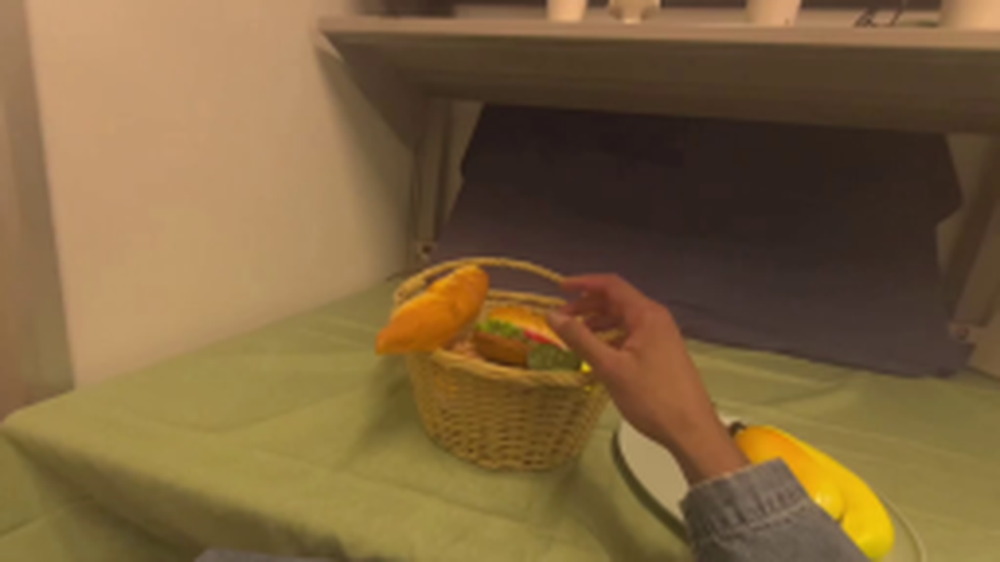
视觉工具实际返回图片 3
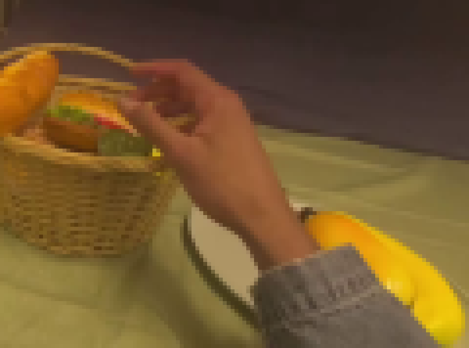
视觉工具实际返回图片 4

视觉工具实际返回图片 5
视觉工具实际返回图片 6
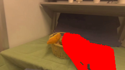
视觉工具实际返回图片 7
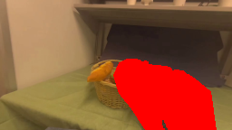
视觉工具实际返回图片 8
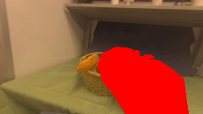
视觉工具实际返回图片 9
视觉工具实际返回图片 10
视觉工具实际返回图片 11
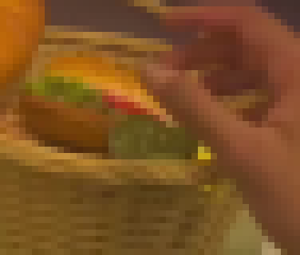
视觉工具实际返回图片 12
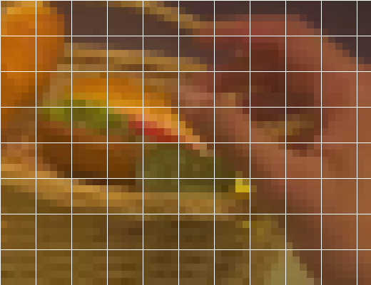
视觉工具实际返回图片 13
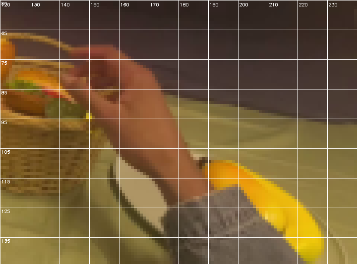
视觉工具实际返回图片 14
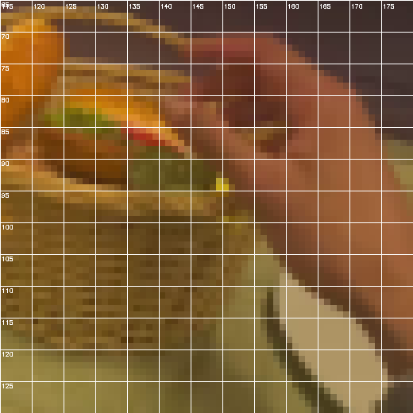
视觉工具实际返回图片 15
视觉工具实际返回图片 16
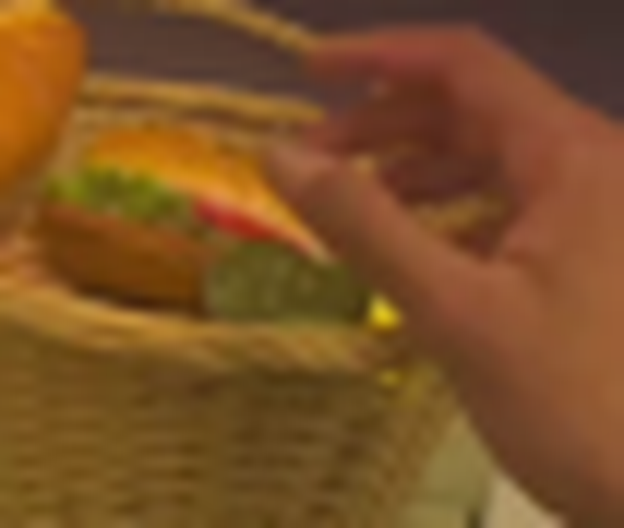
视觉工具实际返回图片 17
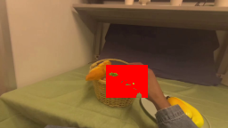
视觉工具实际返回图片 18
视觉工具实际返回图片 19
视觉工具实际返回图片 20
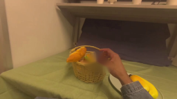
视觉工具实际返回图片 21
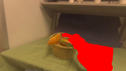
视觉工具实际返回图片 22
视觉工具实际返回图片 23
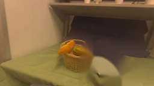
视觉工具实际返回图片 24
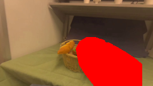
视觉工具实际返回图片 25

视觉工具实际返回图片 26
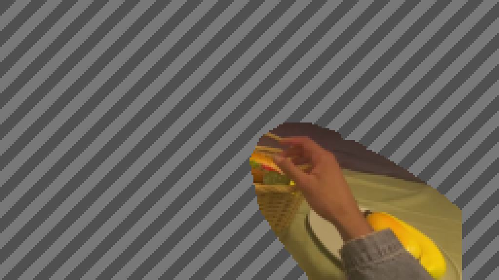
视觉工具实际返回图片 27

视觉工具实际返回图片 28
视觉工具实际返回图片 29
视觉工具实际返回图片 30
视觉工具实际返回图片 31
视觉工具实际返回图片 32
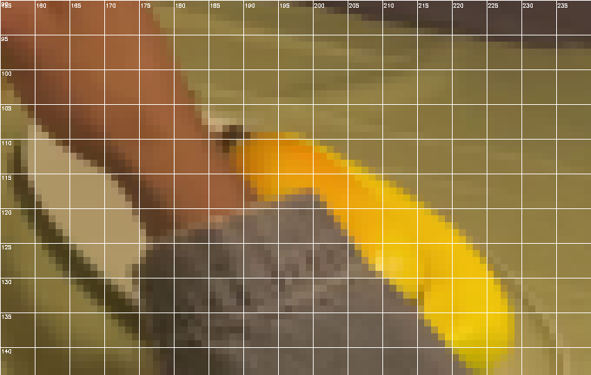
视觉工具实际返回图片 33
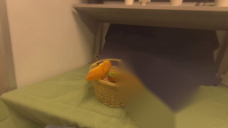
视觉工具实际返回图片 34
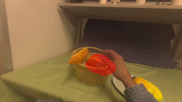
视觉工具实际返回图片 35
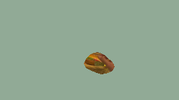
视觉工具实际返回图片 36
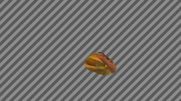
视觉工具实际返回图片 37
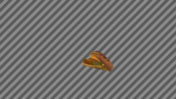
视觉工具实际返回图片 38
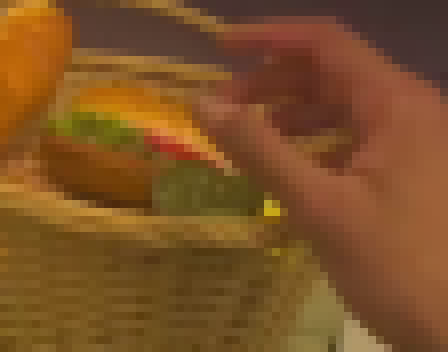
视觉工具实际返回图片 39
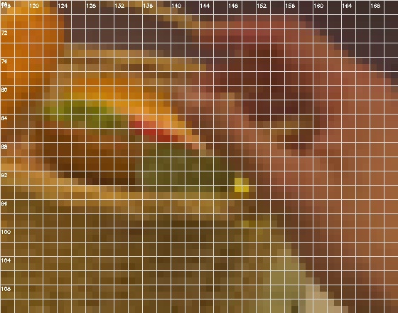
视觉工具实际返回图片 40
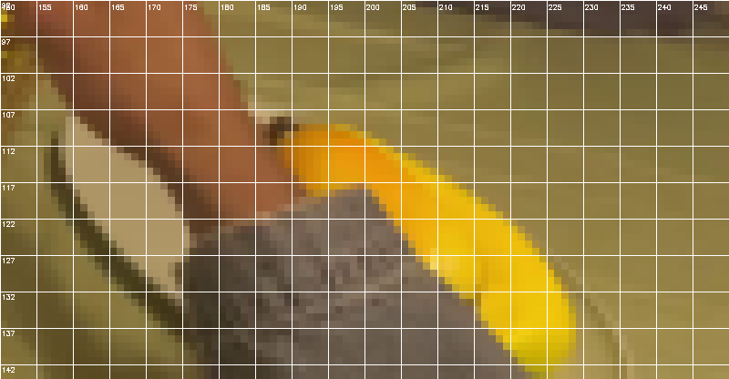
视觉工具实际返回图片 41
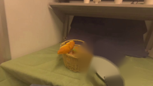
视觉工具实际返回图片 42
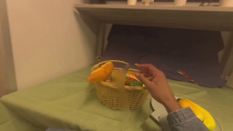
视觉工具实际返回图片 43
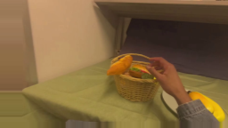
视觉工具实际返回图片 44
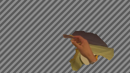
视觉工具实际返回图片 45

视觉工具实际返回图片 46
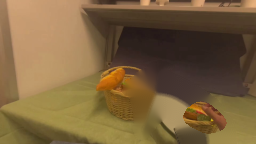
视觉工具实际返回图片 47
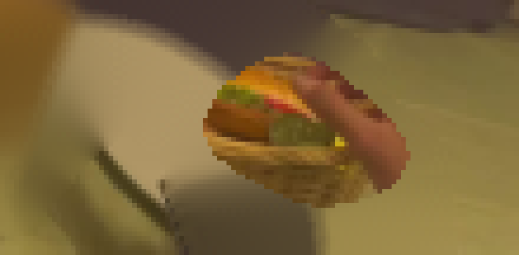
视觉工具实际返回图片 48
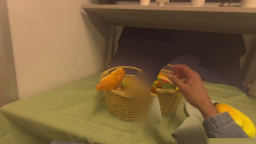
视觉工具实际返回图片 49
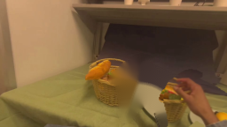
视觉工具实际返回图片 50
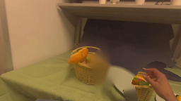
视觉工具实际返回图片 51
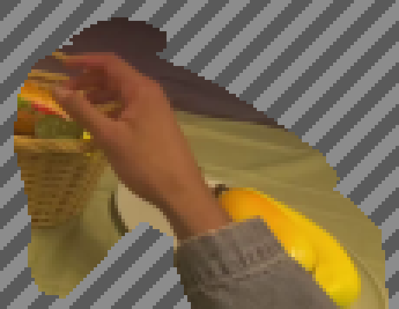
视觉工具实际返回图片 52
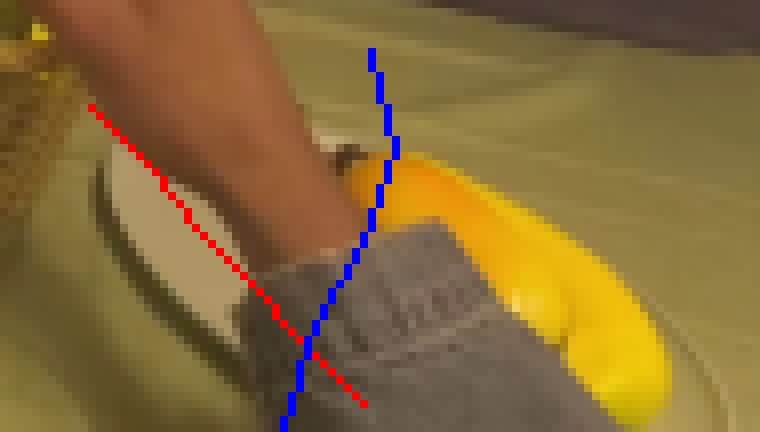
视觉工具实际返回图片 53
视觉工具实际返回图片 54
视觉工具实际返回图片 55
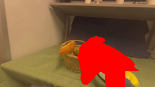
视觉工具实际返回图片 56
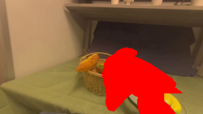
视觉工具实际返回图片 57

视觉工具实际返回图片 58
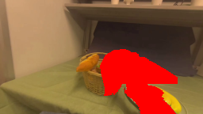
视觉工具实际返回图片 59
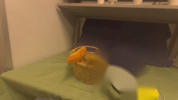
视觉工具实际返回图片 60
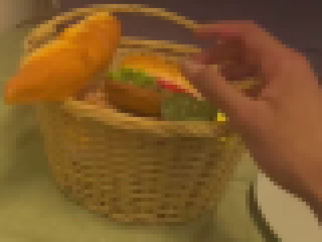
视觉工具实际返回图片 61
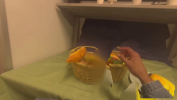
视觉工具实际返回图片 62
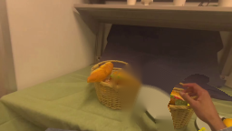
视觉工具实际返回图片 63
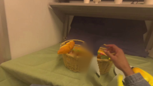
视觉工具实际返回图片 64
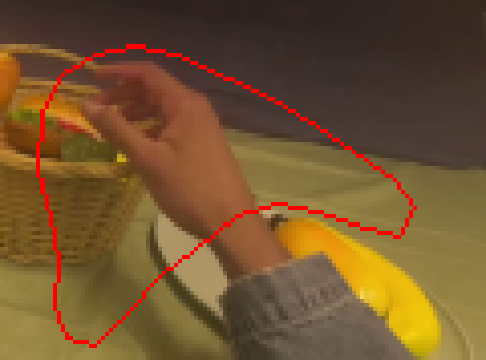
视觉工具实际返回图片 65
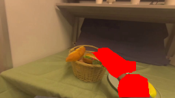
视觉工具实际返回图片 66
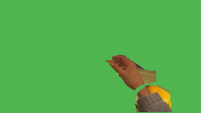
视觉工具实际返回图片 67
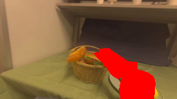
视觉工具实际返回图片 68
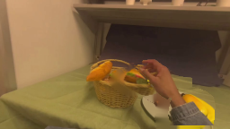
视觉工具实际返回图片 69
视觉工具实际返回图片 70
视觉工具实际返回图片 71
视觉工具实际返回图片 72

视觉工具实际返回图片 73
视觉工具实际返回图片 74
视觉工具实际返回图片 75
视觉工具实际返回图片 76
视觉工具实际返回图片 77
视觉工具实际返回图片 78
视觉工具实际返回图片 79
视觉工具实际返回图片 80
视觉工具实际返回图片 81
视觉工具实际返回图片 82
视觉工具实际返回图片 83
视觉工具实际返回图片 84
视觉工具实际返回图片 85
视觉工具实际返回图片 86
视觉工具实际返回图片 87
视觉工具实际返回图片 88
视觉工具实际返回图片 89
视觉工具实际返回图片 90
视觉工具实际返回图片 91
视觉工具实际返回图片 92
保存候选 1 份；完成命令 99 次；可验证图片返回 92 张。原始 API 响应与完整日志保留在本地。